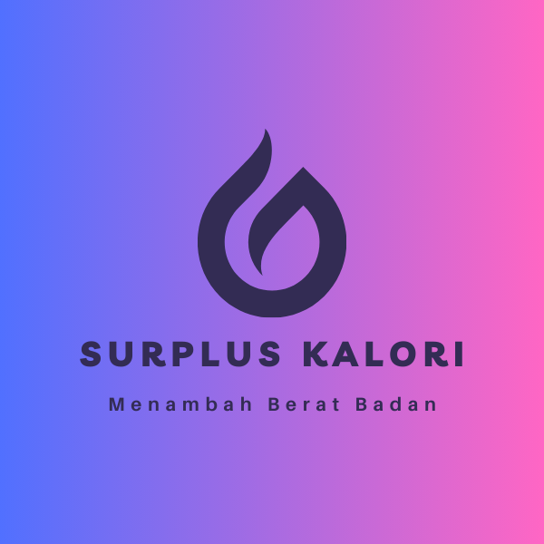
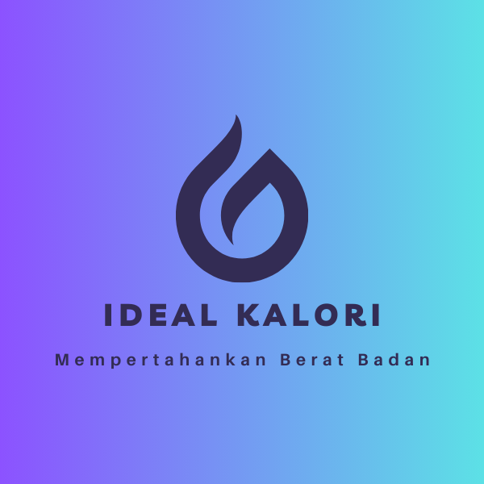

Teruslah mengikuti program untuk mencapai berat badan idealmu! Tambahkan berat badanmu secara sehat dengan mengikuti saran nutrisi dan menu terpersonalisasi di aplikasi. Raih keseimbangan dan kepercayaan diri dengan
langkah-langkah yang dirancang khusus untukmu. Sehat, bahagia, dan ideal bersama GiziSehatku ini!

Surplus Kalori & Menambah Berat Badan.
Salah satu kunci untuk menaikkan berat badan dengan cepat adalah surplus kalori, artinya asupan kalori lebih banyak daripada kebutuhan kalori sebenarnya. Tambahkan asupan kalori sekitar 700–1000 kalori dari total kebutuhan
kalori harian
Berolahraga secara rutin
Meningkatkan asupan protein
Makan sebelum tidur
Meningkatkan asupan kalori
No
Nama
Berat(gr)
Kalori (kkal)
Manfaat
1
Kacang-kacangan
100 gr
347
Manfaat Untuk Kesehatan
Kacang diketahui padat kalori, serat, tinggi protein, dan kaya akan nutrisi. Kacang baik untuk pencernaan, dapat membantu menurunkan kolestrol, mengatur gula darah, dan baik untuk jantung.
Kamu bisa mengonsumsi kacang-kacangan ini secara langsung atau menambahkannya pada sereal atau yoghurt. Kamu juga bisa mengolahnya menjadi selai kacang tanpa gula yang sehat dan nikmat dikonsumsi dengan roti
tawar.
2
Selai kacang
100 gr
588,4
Manfaat Untuk Kesehatan
Selain menyediakan lemak tak jenuh tunggal yang dapat membantu melangsingkan perut, serat yang mengenyangkan, dan protein yang dapat membantu meningkatkan metabolisme, selai kacang tanah juga mengandung
genistein, senyawa yang membantu menurunkan gen obesitas dan mengurangi kemampuan tubuh untuk menyimpan lemak
3
Nasi putih
100 gr
175
Manfaat Untuk Kesehatan
Nasi putih mengandung karbohidrat kompleks yang menjadi sumber energi utama bagi tubuh. Selain itu, nasi putih juga menyediakan serat, vitamin, dan mineral yang penting untuk kesehatan. Konsumsi nasi putih
dengan lauk dan sayur dapat membantu menjaga keseimbangan gizi dan memberikan energi yang stabil.
4
Kacang tanah goreng
100 gr
567
Manfaat Untuk Kesehatan
Kacang tanah bermanfaat untuk mengurangi risiko kanker, menvegah pembentukan batu empedu, mengontrol gula darah, menurunkan risiko peradangan, mengoptimalkan masa otot dan fungsi otak, serta mengatur gula
darah.
Namun, jika ingin mengonsumsi kacang tanah goreng hendaknya menggunakan minyak yang masih baru agar tidak menimbulkan lemak jahat yang bisa menyebabkan kanker dan masalah kesehatan lainnya.
5
Ikan
1 Porsi
187
Manfaat Untuk Kesehatan
Selain menambah berat badan, mengonsumsi ikan juga bisa meningkatkan fungsi otak, menjaga kesehatan jantung, dan menjaga daya tahan tubuh. Untuk mengonsumsinya, kamu dianjurkan mengolah ikan dengan cara
ditumis, dikukus, dipanggang, atau direbus.
6
Dada ayam
100 gr
165
Manfaat Untuk Kesehatan
Tidak hanya tinggi kalori, dada ayam juga tinggi protein yang bisa menambah berat badan dan massa otot serta membuat perut kenyang lebih lama.
Selain itu, bagian ayam ini juga mengandung sedikit lemak, selenium, fosfor, zinc, kalium, serta vitamin B6 dan vitamin B12.
Untuk menikmatinya, kamu bisa mengolah dada ayam menjadi aneka menu, seperti soto, semur, tumisan, atau isian pada roti lapis.
7
Ubi jalar
100 gr
85,5
Manfaat Untuk Kesehatan
Kandungan karbohidrat kompleks pada ubi jalar dinilai lebih baik untuk pencernaan. Konsumsi ubi jalar secara teratur dapat mencegah sembelit, memperbaiki kesehatan usus, dan mengurangi risiko penyakit usus.
Namun, jika berlebihan bisa menyebabkan masalah batu ginjal dan gangguan jantung akibat sejumlah kandungan mineral pada ubi jalar
Ubi jalar lebih sehat jika diolah dengan cara direbus, dikukus, atau dipanggang.
8
Telur
1 Butir
74
Manfaat Untuk Kesehatan
Selain berkalori tinggi, telur rebus juga mengandung lemak, kolesterol, protein, kalsium, zat besi, serta vitamin A dan vitamin D. Telur merupakan salah satu makanan terbaik untuk membentuk otot dan menambah
berat badan. Telur menyediakan kombinasi protein berkualitas tinggi dan lemak sehat. Setiap telur mentah besar Faktanya, hampir semua nutrisi bermanfaat dalam telur ditemukan di kuning telur. Karena itu, tidak
ada batasan jumlah yang harus dimakan dalam sehari karena nutrisinya yang besar.
9
Daging merah
100 gr
288
Manfaat Untuk Kesehatan
Daging merah juga tinggi protein dan lemak, serta mengandung selenium, zinc, niacin, zat besi, dan vitamin B12.
Kamu bisa mengolah daging ini menjadi soto, rendang, semur, bahkan tumisan. Meski bermanfaat untuk menambah berat badan, jangan mengonsumsi daging merah berlebihan, ya. Soalnya, terlalu banyak makan daging
merah bisa menyebabkan obesitas dan meningkatkan risiko terkena penyakit jantung.
Kandungannya terdiri dari leusin dan asam amino yang membantu merangsang sintesis protein otot
10
Pati
100 gr
355
Manfaat Untuk Kesehatan
Pati pada dasarnya kaya akan nutrisi dan serat penting, meningkatkan asupan kalori, dan meningkatkan simpanan glikogen otot Anda.
11
Salmon dan ikan berminyak
100 gr
208
Manfaat Untuk Kesehatan
Salmon dan ikan berminyak adalah sumber protein yang sangat baik dan lemak sehat yang penting. Salmon dan ikan berminyak lainnya mengandung lemak omega-3 yang sehat untuk tubuh. Mereka juga menyediakan protein
berkualitas tinggi untuk membantu Anda membangun otot.
12
Cereal batangan
100 gr
350
Manfaat Untuk Kesehatan
Sereal batangan biasanya mengandung biji-bijian utuh, serat, dan berbagai nutrisi penting. Beberapa manfaat sereal batangan termasuk memberikan energi yang tahan lama, menyediakan serat untuk pencernaan yang
sehat, dan menyumbangkan vitamin dan mineral seperti zat besi, vitamin B, dan kalsium. Pilih sereal batangan yang rendah gula dan tinggi serat untuk mendapatkan manfaat gizi maksimal.
13
Cokelat hitam
10 gr
604
Manfaat Untuk Kesehatan
Cokelat hitam berkualitas tinggi mengandung banyak antioksidan dan manfaat kesehatan. Cokelat hitam dengan setidaknya 70 persen kakao dapat membantu mengatur hormon stres, gula darah, dan meningkatkan berat
badan.
14
Keju
100 gr
402,5
Manfaat Untuk Kesehatan
Keju merupakan sumber protein, kalsium, vitamin D, dan zat besi. Manfaat keju antara lain mendukung kesehatan tulang dan gigi, menyediakan protein penting untuk pertumbuhan dan perbaikan sel, serta dapat
membantu meningkatkan penyerapan kalsium dalam tubuh. Keju juga mengandung lemak dan kalori, sehingga sebaiknya dikonsumsi dengan bijak sebagai bagian dari pola makan seimbang.
15
Yoghurt
100 gr
58,8
Manfaat Untuk Kesehatan
Yogurt mengandung bakteri baik seperti probiotik, yang dapat meningkatkan kesehatan saluran pencernaan dan sistem kekebalan tubuh. Manfaat yogurt meliputi peningkatan flora bakteri usus, penyerapan nutrisi yang
lebih baik, dan dapat membantu menjaga keseimbangan mikroorganisme di saluran pencernaan. Selain itu, yogurt juga merupakan sumber protein, kalsium, dan vitamin B12. Pilih yogurt tanpa tambahan gula berlebihan
untuk mendapatkan manfaat terbaik.
16
Protein shake
30 gr
121
Manfaat Untuk Kesehatan
Protein shake dapat menjadi cara yang tepat untuk meningkatkan asupan protein tanpa makan makanan utuh terlalu banyak. Protein shake juga dapat berguna bagi orang-orang yang vegetarian atau vegan yang perlu
menambah berat badan, tetapi tidak memiliki nafsu makan yang besar. Jumlah protein dalam protein shake bervariasi tergantung pada mereknya. Anda dapat memeriksa kandungannya melalui label pada kemasan protein
shake.
17
Energy bar
100 gr
350
Manfaat Untuk Kesehatan
Energy bar merupakan batangan padat dari bahan-bahan sehat seperti alpukat, pisang, dan keju dalam porsi kecil. Campuran bahan-bahan ini akan mengandung banyak kalori yang berguna untuk menambah berat badan.
18
Saus cocol
100 gr
100
Manfaat Untuk Kesehatan
Saus cocol yang mengandung kalori tinggi dapat diperoleh dari guacamole, hummus, dan saus kacang. Saus seperti ini mudah disajikan dan cocok digunakan untuk dressing salad atau saus sandwich.
Saus tomat dapat menghapus zat-zat berbahya dari tubuh dengan mengosongkan empedu dari hati ke usus. Dapat mencegah kanker, baik untuk jantung, serta meningkatkan metabolisme tubuh karena kandungan vitamin C
pada kapsaisin. Namun, mengkonsumsi terlalu banyak juga akan mengakibatkan peradangan pada usus dan lambung.
19
Susu
100 gr
70
Manfaat Untuk Kesehatan
Susu telah digunakan sebagai penambah berat badan atau pembangun otot selama beberapa dekade. Susu memberikan keseimbangan protein, karbohidrat, lemak, dan merupakan sumber kalsium yang baik, serta vitamin dan
mineral lainnya. Susu mengandung protein kasein dan whey. Susu dapat meningkatkan imunitas tubuh, memperkuat tulang, memelihara kesehatan jantung, dan meningkatkan kualitas tidur dan fungsi otak.
20
Suplemen protein
137 gr
140
Manfaat Untuk Kesehatan
Mengkonsumsi suplemen protein adalah strategi umum bagi para atlet dan binaragawan yang ingin menambah berat badan. Ada banyak jenis yang tersedia, termasuk whey, kedelai, telur, dan protein kacang polong.
21
Soto Makassar
150 gr
525
Manfaat Untuk Kesehatan
Beberapa manfaat umum dari soto Makasar termasuk menyediakan protein dari daging, energi dari karbohidrat bihun, dan nutrisi dari berbagai rempah dan sayuran yang digunakan dalam penyajiannya. Tetaplah
memperhatikan porsi dan bahan-bahan yang digunakan untuk menjaga keseimbangan nutrisi.
22
Mi goreng instan
80 gr
350
Manfaat Untuk Kesehatan
Mie goreng instan biasanya memiliki kandungan kalori tinggi dari lemak dan karbohidrat. Meskipun memberikan kepraktisan dan rasa yang enak, konsumsi mie goreng instan sebaiknya dimoderasi. Beberapa nutrisi
dalam mie goreng instan termasuk protein dari mi, sedikit serat, dan sejumlah vitamin dan mineral. Namun, seringkali mie goreng instan juga mengandung sodium dan lemak jenuh yang tinggi. Penting untuk memilih
variasi yang lebih sehat, membatasi konsumsi garam dan minyak, serta memperkaya dengan sayuran atau protein tambahan agar dapat memberikan beberapa nutrisi tambahan.
23
Dada ayam goreng (dengan kulit)
100 gr
216
Manfaat Untuk Kesehatan
Dada ayam goreng dengan kulit dapat menyediakan beberapa manfaat nutrisi, meskipun perlu diingat bahwa proses penggorengan bisa menambah kandungan lemak dan kalori. Beberapa manfaat dada ayam goreng termasuk
1. Protein: Daging ayam adalah sumber protein hewani yang baik, penting untuk pembentukan dan pemeliharaan jaringan tubuh, termasuk otot dan kulit.
2. Vitamin B: Daging ayam mengandung vitamin B kompleks seperti B6 dan B12, yang mendukung fungsi saraf, metabolisme, dan pembentukan sel darah.
3. Mineral: Ayam juga menyediakan mineral seperti selenium dan fosfor, yang penting untuk kesehatan sistem kekebalan tubuh dan tulang.
24
Dada ayam goreng (tanpa kulit)
100 gr
195
Manfaat Untuk Kesehatan
Dada ayam merupakan daging tanpa lemak yang juga rendah kalori, tapi tinggi protein. Dada ayam juga mengandung niasin, selenium, hingga vitamin B12 yang tentu saja sangat baik bagi kesehatan tubuh. Dada ayam
memiliki kandungan lemak jenuh yang lebih rendah. Di sisi lain, bagian ini justru mengandung zat besi dan protein yang tinggi. Anda bisa mengolah dada ayam dengan cara dipanggang atau direbus dan hindari
menggorengnya supaya tidak merusak kandungan baiknya.
25
Perkedel kentang
75 gr
117
Manfaat Untuk Kesehatan
Perkedel, olahan kentang yang digoreng, memberikan beberapa manfaat nutrisi. Berikut adalah beberapa manfaat perkedel:
1. Karbohidrat: Kentang sebagai bahan utama perkedel mengandung karbohidrat kompleks, yang menyediakan sumber energi yang stabil bagi tubuh.
2. Serat: Kentang juga mengandung serat, yang baik untuk pencernaan dan dapat membantu menjaga rasa kenyang lebih lama.
3. Vitamin dan Mineral: Kentang mengandung sejumlah vitamin dan mineral, termasuk vitamin C, vitamin B6, dan potassium.
4. Protein: Jika perkedel mengandung tambahan bahan seperti daging atau ikan, ini dapat memberikan tambahan protein, yang penting untuk pertumbuhan dan perbaikan sel tubuh.
26
Tahu isi
1 Iris
124
Manfaat Untuk Kesehatan
Tahu isi, yang biasanya diisi dengan campuran sayuran, telur, dan bumbu, memiliki beberapa manfaat nutrisi. Berikut adalah beberapa manfaat tahu isi:
Protein: Tahu sebagai bahan dasar tahu isi merupakan sumber protein nabati yang baik, penting untuk pertumbuhan dan perbaikan jaringan tubuh.
Serat: Jika diisi dengan sayuran, tahu isi dapat memberikan tambahan serat, yang mendukung pencernaan dan dapat membantu menjaga rasa kenyang.
27
Tumis kangkung
85 gr
155
Manfaat Untuk Kesehatan
Tumis kangkung dapat memberikan beberapa manfaat nutrisi. Berikut adalah beberapa manfaat tumis kangkung:
1. Serat: Kangkung kaya akan serat, yang baik untuk pencernaan dan dapat membantu menjaga kesehatan usus.
2. Vitamin dan Mineral: Kangkung mengandung sejumlah vitamin dan mineral seperti vitamin A, vitamin C, vitamin K, zat besi, dan kalsium, yang penting untuk kesehatan tulang, sistem kekebalan tubuh, dan fungsi
sel tubuh.
3. Antioksidan: Kangkung mengandung antioksidan seperti beta-karoten dan lutein, yang dapat membantu melawan radikal bebas dan mendukung kesehatan mata.
4. Rendah Kalori: Kangkung memiliki kandungan kalori yang rendah, membuatnya menjadi pilihan yang baik untuk yang sedang berusaha menjaga berat badan.
5. Kandungan Air: Sebagian besar berat kangkung adalah air, sehingga dapat membantu menjaga hidrasi tubuh
Mempertahankan Berat Badan
Pertahankan pencapaianmu! Gunakan aplikasi ini sebagai panduan setiap hari untuk menjaga berat badan idealmu. Terus perbarui menu sehat dan penuhi kebutuhan nutrisimu. Dengan pemantauan berat badan dan notifikasi, aplikasi ini
membantu menjaga keseimbangan hidup sehatmu. Pertahankan langkah positif menuju berat badan yang ideal!

Ideal & Mempertahankan Berat Badan.
Terkadang rencana diet yang tidak realistis membuat Anda semakin lapar dan berakhir dengan makan secara berlebihan. Padahal, Anda bisa menerapkan cara menurunkan berat badan atau menjaga berat badan agar tetap ideal secara
mandiri.
Berolahraga secara rutin
Jangan melewatkan sarapan
Istirahat yang cukup
Tetap makan dengan menu berbeda
Makanan Berat
No
Nama
Berat(gr)
Kalori (kkal)
Manfaat
1
Nasi putih
100 gr
175
Manfaat Untuk Kesehatan
1. Sumber Energi: Nasi putih adalah sumber energi utama karena mengandung karbohidrat kompleks. Karbohidrat ini dipecah menjadi glukosa, yang merupakan sumber energi utama untuk otak dan otot.
2. Rendah Lemak dan Bebas Kolesterol: Nasi putih rendah lemak dan bebas kolesterol, sehingga cocok untuk mereka yang memperhatikan asupan lemak dan kolesterol dalam diet mereka.
3. Kandungan Protein: Meskipun tidak sebanyak nasi merah atau nasi coklat, nasi putih tetap mengandung protein, yang diperlukan untuk pertumbuhan dan perbaikan sel tubuh.
4. Mudah Dicerna: Nasi putih biasanya mudah dicerna oleh tubuh, membuatnya cocok untuk konsumsi sehari-hari dan menjadi pilihan yang baik untuk individu dengan sensitivitas pencernaan.
5. Bersifat Gluten-Free: Nasi putih tidak mengandung gluten, sehingga dapat dijadikan alternatif bagi mereka yang memiliki intoleransi gluten atau penyakit celiac.
2
Nasi merah
100 gr
110
Manfaat Untuk Kesehatan
1. Kandungan Serat yang Tinggi: Nasi merah mengandung serat makanan yang lebih tinggi dibandingkan dengan nasi putih. Serat membantu meningkatkan pencernaan, mencegah sembelit, dan menjaga kesehatan usus.
2. Nutrisi Lebih Tinggi: Nasi merah mengandung lebih banyak nutrisi daripada nasi putih karena lapisan kulit ari yang masih terdapat pada nasi merah. Ini mencakup vitamin B kompleks, zat besi, magnesium,
fosfor, potassium, selenium, dan antioksidan.
3. Mendukung Kesehatan Jantung: Serat dan nutrisi lainnya dalam nasi merah dapat membantu menjaga kesehatan jantung. Serat membantu mengurangi kadar kolesterol LDL (kolesterol jahat), dan magnesium dalam
nasi merah berperan dalam regulasi tekanan darah.
4. Kontrol Gula Darah: Kandungan serat yang tinggi dalam nasi merah dapat membantu mengontrol penyerapan glukosa dan insulin, yang dapat bermanfaat bagi orang dengan diabetes atau risiko diabetes.
5. Mengandung Antioksidan: Nasi merah mengandung antioksidan, seperti senyawa flavonoid dan lignan, yang membantu melawan radikal bebas dan melindungi sel-sel tubuh dari kerusakan oksidatif.
6. Sumber Energi yang Lambat: Nasi merah memiliki indeks glikemik yang lebih rendah dibandingkan nasi putih, sehingga dapat memberikan energi secara bertahap dan menjaga kadar gula darah lebih stabil.
7. Mendukung Program Penurunan Berat Badan: Kandungan serat yang tinggi dalam nasi merah dapat memberikan rasa kenyang lebih lama, membantu mengontrol nafsu makan, dan mendukung program penurunan berat
badan.
3
Kentang rebus
100 gr
87
Manfaat Untuk Kesehatan
1. Sumber Karbohidrat: Kentang adalah sumber karbohidrat kompleks yang menyediakan energi bertahap. Karbohidrat adalah nutrien penting yang diperlukan oleh tubuh untuk aktivitas sehari-hari dan fungsi
organ.
2. Serat Makanan: Kentang mengandung serat makanan, terutama jika dimakan bersama kulitnya. Serat membantu meningkatkan pencernaan, mencegah sembelit, dan menjaga kesehatan usus.
3. Kandungan Vitamin C: Kentang mengandung vitamin C, yang berperan dalam meningkatkan sistem kekebalan tubuh, mempercepat penyembuhan luka, dan melindungi sel-sel tubuh dari kerusakan akibat radikal bebas.
4. Mengandung Potassium: Kentang adalah sumber potassium yang baik. Potassium penting untuk menjaga keseimbangan cairan dalam tubuh, mendukung fungsi otot dan saraf, serta mengatur tekanan darah.
5. Rendah Kalori dan Lemak: Kentang rebus umumnya rendah kalori dan lemak, menjadikannya pilihan yang baik untuk mereka yang memperhatikan asupan kalori dan lemak sebagai bagian dari pola makan sehat.
4
Ubi jalar
100 gr
86
Manfaat Untuk Kesehatan
1. Sumber Karbohidrat: Ubi jalar merupakan sumber karbohidrat kompleks, yang menyediakan energi bertahap. Ini menjadikannya pilihan makanan yang baik untuk memberikan energi yang stabil dan tahan lama.
2. Serat Makanan: Ubi jalar mengandung serat makanan, baik serat larut maupun tidak larut. Serat membantu meningkatkan pencernaan, mencegah sembelit, dan menjaga kesehatan usus.
3. Vitamin A: Ubi jalar mengandung beta-karoten, sejenis provitamin A, yang dapat diubah menjadi vitamin A dalam tubuh. Vitamin A penting untuk kesehatan mata, kulit, dan sistem kekebalan tubuh.
4. Vitamin C: Ubi jalar mengandung vitamin C, antioksidan yang membantu melawan radikal bebas, mendukung sistem kekebalan tubuh, dan meningkatkan produksi kolagen untuk kesehatan kulit.
5. Regulasi Gula Darah: Ubi jalar memiliki indeks glikemik yang lebih rendah daripada kentang biasa, yang dapat membantu mengatur kadar gula darah. Ini bisa menjadi pilihan makanan yang baik untuk penderita
diabetes.
6. Mendukung Pemulihan Pasca Olahraga: Kandungan elektrolit, seperti potassium dan magnesium, dalam ubi jalar dapat membantu dalam pemulihan tubuh setelah berolahraga dengan menggantikan cairan dan
elektrolit yang hilang.
5
Singkong
100 gr
160
Manfaat Untuk Kesehatan
1. Sumber Energi: Singkong mengandung karbohidrat kompleks, yang menyediakan sumber energi yang baik. Ini membuatnya menjadi komponen penting dalam pola makan yang menyediakan energi bertahap.
2. Rendah Lemak dan Kolesterol: Singkong memiliki kandungan lemak yang rendah dan tidak mengandung kolesterol, menjadikannya pilihan makanan sehat untuk menjaga kesehatan jantung.
3. Antioksidan: Singkong mengandung senyawa antioksidan, seperti karotenoid, yang dapat membantu melawan radikal bebas dalam tubuh dan melindungi sel-sel dari kerusakan oksidatif.
4. Mengandung Saponin dan Flavonoid: Beberapa senyawa seperti saponin dan flavonoid yang ditemukan dalam singkong memiliki sifat antiinflamasi dan dapat memberikan manfaat kesehatan.
5. Bebas Gluten: Singkong merupakan sumber karbohidrat bebas gluten, sehingga cocok untuk orang-orang yang memiliki sensitivitas atau alergi terhadap gluten.
6
Roti putih
1 lembar
66
Manfaat Untuk Kesehatan
1. Sumber Karbohidrat: Roti putih merupakan sumber karbohidrat yang baik. Karbohidrat adalah nutrisi utama yang menyediakan energi bagi tubuh.
2. Serat Makanan: Meskipun kandungan seratnya lebih rendah dibandingkan dengan roti gandum atau roti gandum utuh, beberapa roti putih bisa mengandung serat makanan yang memberikan kontribusi untuk kesehatan
pencernaan.
3. Sumber Energi Cepat: Karbohidrat dalam roti putih dapat memberikan energi cepat karena cepat dicerna oleh tubuh dan meningkatkan kadar gula darah dengan cepat. Ini dapat bermanfaat bagi orang yang
membutuhkan sumber energi instan, seperti sebelum atau setelah berolahraga.
7
Roti
1 lembar
67
Manfaat Untuk Kesehatan
1. Sumber Karbohidrat: Roti adalah sumber utama karbohidrat kompleks, yang merupakan sumber energi yang penting untuk tubuh. Karbohidrat adalah bahan bakar utama untuk otak dan otot.
2. Serat Makanan: Roti yang dibuat dari tepung gandum utuh atau biji-bijian utuh dapat menjadi sumber serat makanan. Serat membantu meningkatkan pencernaan, mencegah sembelit, dan memberikan rasa kenyang
lebih lama.
3. Kandungan Vitamin dan Mineral: Roti yang terbuat dari tepung gandum utuh dapat mengandung sejumlah vitamin dan mineral, seperti vitamin B, zat besi, magnesium, dan selenium. Ini memberikan kontribusi
pada kesehatan umum tubuh.
4. Asupan Zat Gizi: Roti juga dapat menyediakan asupan zat gizi penting seperti protein, yang dibutuhkan untuk pembentukan dan perbaikan jaringan tubuh.
8
Mi goreng instan
80 gr
350
Manfaat Untuk Kesehatan
Mie goreng instan biasanya memiliki kandungan kalori tinggi dari lemak dan karbohidrat. Meskipun memberikan kepraktisan dan rasa yang enak, konsumsi mie goreng instan sebaiknya dimoderasi. Beberapa nutrisi
dalam mie goreng instan termasuk protein dari mi, sedikit serat, dan sejumlah vitamin dan mineral. Namun, seringkali mie goreng instan juga mengandung sodium dan lemak jenuh yang tinggi. Penting untuk
memilih variasi yang lebih sehat, membatasi konsumsi garam dan minyak, serta memperkaya dengan sayuran atau protein tambahan agar dapat memberikan beberapa nutrisi tambahan.
9
Dada ayam
100 gr
216
Manfaat Untuk Kesehatan
1. Sumber Protein: Dada ayam adalah sumber protein hewani yang baik. Protein penting untuk pertumbuhan dan perbaikan sel-sel tubuh, pembentukan otot, dan fungsi tubuh secara keseluruhan.
2. Vitamin dan Mineral: Dada ayam mengandung sejumlah vitamin dan mineral seperti vitamin B6, niacin, fosfor, dan selenium. Vitamin dan mineral ini berperan dalam berbagai fungsi tubuh termasuk metabolisme
energi, pembentukan DNA, dan perlindungan sel tubuh dari kerusakan.
3. Asam Lemak Esensial: Daging ayam mengandung asam lemak esensial, seperti omega-3 dan omega-6, yang mendukung kesehatan jantung, fungsi otak, dan sistem saraf.
4. Sumber Energi: Daging ayam juga menyediakan energi dalam bentuk kalori. Meskipun ini diperlukan untuk memenuhi kebutuhan energi tubuh, konsumsi harus seimbang agar tidak berlebihan.
5. Mendukung Pertumbuhan Otot: Protein yang terdapat dalam dada ayam dapat mendukung pertumbuhan dan pemeliharaan otot. Ini dapat bermanfaat bagi mereka yang aktif secara fisik dan berpartisipasi dalam
kegiatan olahraga.
10
Dada ayam goreng (tanpa kulit)
100 gr
184
Manfaat Untuk Kesehatan
1. Sumber Protein: Dada ayam tanpa kulit tetap menjadi sumber protein yang baik. Protein penting untuk pertumbuhan dan perbaikan jaringan tubuh, pembentukan otot, serta berbagai fungsi tubuh lainnya.
2. Rendah Lemak: Dada ayam tanpa kulit cenderung lebih rendah lemak daripada dada ayam dengan kulit. Menghilangkan kulit dapat membantu mengurangi jumlah lemak jenuh dan kalori yang dikonsumsi.
3. Asam Lemak Esensial: Dada ayam menyediakan asam lemak esensial, seperti omega-3 dan omega-6, yang mendukung kesehatan jantung, fungsi otak, dan sistem saraf.
4. Mendukung Pertumbuhan Otot: Protein dalam dada ayam dapat mendukung pertumbuhan dan pemeliharaan otot, yang bermanfaat bagi mereka yang aktif secara fisik atau berpartisipasi dalam kegiatan olahraga.
11
Perkedel kentang
75 gr
117
Manfaat Untuk Kesehatan
1. Sumber Karbohidrat: Kentang sebagai bahan utama dalam perkedel kentang merupakan sumber karbohidrat yang baik. Karbohidrat adalah sumber energi utama untuk tubuh.
2. Serat Makanan: Meskipun kandungan serat kentang mungkin berkurang selama proses pengolahan, perkedel kentang masih dapat menyediakan sejumlah serat makanan. Serat membantu meningkatkan pencernaan, mencegah sembelit, dan memberikan rasa kenyang lebih lama.
3. Protein: Meskipun kandungan protein dalam kentang tidak sebanyak pada sumber protein hewani, perkedel kentang tetap menyediakan beberapa protein yang dibutuhkan untuk pertumbuhan dan perbaikan sel tubuh.
4. Rendah Lemak (Tanpa Penggorengan Berlebihan): Kentang sendiri adalah bahan makanan rendah lemak. Jika perkedel kentang digoreng dengan jumlah minyak yang wajar dan sehat, perkedel kentang dapat tetap menjadi pilihan rendah lemak.
5. Pilihan Vegetarian: Perkedel kentang dapat menjadi pilihan makanan yang lezat dan bergizi bagi mereka yang mengikuti pola makan vegetarian atau vegan.
12
Sambal goreng kentang
100 gr
107
Manfaat Untuk Kesehatan
1. Sumber Energi: Kentang sebagai bahan utama sambal goreng kentang adalah sumber karbohidrat kompleks yang baik. Karbohidrat adalah sumber utama energi untuk tubuh.
2. Serat Makanan: Meskipun proses penggorengan mungkin mengurangi sebagian serat, kentang alami mengandung serat makanan yang baik untuk pencernaan dan menjaga rasa kenyang.
3.Antioksidan dari Bumbu Pedas: Sambal atau bumbu pedas dalam sambal goreng kentang dapat mengandung antioksidan dari bahan-bahan seperti cabai. Antioksidan membantu melawan radikal bebas dan melindungi sel-sel tubuh dari kerusakan oksidatif.
13
Tumis kacang panjang dan tempe
110 gr
102
Manfaat Untuk Kesehatan
1. Vitamin dan Mineral: Kacang panjang dan tempe mengandung berbagai vitamin dan mineral yang penting untuk kesehatan tubuh. Kacang panjang mengandung vitamin K, vitamin A, vitamin C, folat, dan mangan, sementara tempe mengandung vitamin B kompleks, seperti vitamin B2 (riboflavin) dan vitamin B6, serta zat besi dan kalsium.
2. Asam Folat (Folat B9): Folat, atau vitamin B9, yang ditemukan dalam tempe, adalah nutrisi penting untuk perkembangan janin selama kehamilan dan membantu dalam pembentukan sel darah merah.
3. Sumber Zat Besi: Tempe mengandung zat besi, mineral yang penting untuk transportasi oksigen dalam darah dan pencegahan anemia.
4. Sumber Asam Lemak Esensial: Tempe juga mengandung asam lemak esensial, seperti asam linoleat, yang penting untuk fungsi tubuh dan kesehatan jantung.
14
Tahu isi
1 iris
124
Manfaat Untuk Kesehatan
1. Sumber Protein: Tahu, sebagai bahan dasar tahu isi, merupakan sumber protein nabati yang baik. Protein adalah nutrisi penting untuk pertumbuhan dan perbaikan sel-sel tubuh, serta menjaga kesehatan otot dan sistem kekebalan tubuh.
2. Serat Makanan: Tahu isi juga bisa mengandung serat, terutama jika diisi dengan sayuran. Serat membantu meningkatkan pencernaan, mencegah sembelit, dan memberikan rasa kenyang lebih lama.
3. Vitamin dan Mineral: Tahu mengandung sejumlah vitamin dan mineral, termasuk kalsium, fosfor, magnesium, dan vitamin B kompleks. Kalsium dan fosfor penting untuk kesehatan tulang, sementara magnesium berperan dalam fungsi otot dan sistem saraf.
4. Sumber Energi: Karbohidrat yang terkandung dalam tahu memberikan sumber energi yang baik untuk tubuh.
5. Isi Nutrisi Lainnya dari Bahan Tambahan: Bahan tambahan yang diisi ke dalam tahu isi, seperti sayuran, daging cincang, dan rempah-rempah, dapat menyediakan berbagai nutrisi seperti vitamin, mineral, dan antioksidan.
6. Pilihan Vegetarian dan Vegan: Jika isinya terdiri dari bahan-bahan nabati, tahu isi bisa menjadi pilihan yang cocok untuk orang-orang yang mengikuti pola makan vegetarian atau vegan.
15
Tumis kangkung
85 gr
155
Manfaat Untuk Kesehatan
1. Sumber Vitamin dan Mineral: Kangkung kaya akan vitamin dan mineral yang penting untuk kesehatan tubuh. Ini termasuk vitamin A, vitamin C, vitamin K, vitamin E, vitamin B kompleks (seperti folat dan riboflavin), kalsium, zat besi, magnesium, kalium, dan fosfor.
2. Serat Makanan: Kangkung mengandung serat makanan yang baik untuk pencernaan. Serat membantu mencegah sembelit, menjaga kesehatan usus, dan memberikan rasa kenyang lebih lama.
3. Antioksidan: Kangkung mengandung antioksidan, seperti beta-karoten dan flavonoid, yang membantu melawan radikal bebas dan melindungi sel-sel tubuh dari kerusakan oksidatif.
4. Kandungan Air Tinggi: Kangkung memiliki kandungan air yang tinggi, sehingga dapat membantu menjaga tubuh tetap terhidrasi.
5. Rendah Kalori dan Lemak: Kangkung adalah sayuran yang rendah kalori dan lemak, membuatnya menjadi pilihan yang baik bagi mereka yang memperhatikan asupan kalori dan menjaga berat badan.
6. Pilihan Vegetarian dan Vegan: Kangkung dapat menjadi pilihan yang baik untuk orang-orang yang mengikuti pola makan vegetarian atau vegan.
7. Rendah Kolesterol: Kangkung merupakan makanan rendah kolesterol, sehingga cocok untuk mereka yang memperhatikan kesehatan kardiovaskular.
16
Tahu bakso
1 porsi
119
Manfaat Untuk Kesehatan
Tahu dalam bakso dapat menambah kandungan protein dan memberikan tekstur yang lembut pada hidangan tersebut. Selain itu, tahu juga bisa menjadi alternatif sumber protein nabati bagi yang vegetarian atau ingin mengurangi konsumsi daging.
17
Tumis labu siam
100 gr
106
Manfaat Untuk Kesehatan
Tumis labu siam memiliki beberapa manfaat, antara lain mengandung serat yang baik untuk pencernaan, vitamin C sebagai antioksidan, serta kaya akan nutrisi seperti vitamin A dan mineral. Tumis labu siam juga bisa menjadi pilihan makanan rendah kalori dan lemak, cocok untuk menjaga berat badan.
18
Tahu bacem
1 porsi
119
Manfaat Untuk Kesehatan
Tahu bacem memiliki beberapa manfaat, antara lain memberikan sumber protein nabati yang baik, rendah lemak, dan bebas kolesterol. Proses pemasakan dengan bumbu-bumbu tradisional pada tahu bacem juga dapat memberikan citarasa yang khas dan menambah variasi rasa pada konsumsi harian. Namun, perlu diingat bahwa konsumsi dalam jumlah yang seimbang tetap penting untuk menjaga keseimbangan nutrisi.
19
Tahu sumedang
1 porsi
113
Manfaat Untuk Kesehatan
Tahu Sumedang, yang berasal dari daerah Sumedang di Jawa Barat, memiliki beberapa manfaat, seperti menyediakan protein nabati, serat, dan sejumlah vitamin dan mineral. Protein dalam tahu bermanfaat untuk pertumbuhan dan perbaikan jaringan tubuh, sedangkan serat membantu pencernaan. Tahu Sumedang juga biasanya rendah lemak dan kolesterol, membuatnya menjadi alternatif yang sehat untuk variasi menu.
20
Tempe
1 porsi
157
Manfaat Untuk Kesehatan
Tempe kaya akan protein nabati dan serat pangan yang dapat meningkatkan pencernaan dan mengurangi resiko jantung dan diabetes. tempe juga mengandung lemak tak jenuh dan omega-3 dan 6 yang bermanfaat untuk kesehatan otak dan jantung. juga mengandung vitamin B kompleks untuk metabolisme energi dan kesehatan sistem saraf. tempe juga mengandung mineral dan isovalon yang dapat mengurangi antioksidan dan risiko penyakit degeneratif.
21
Telur dadar
1 Butir
93
Manfaat Untuk Kesehatan
Telur goreng mengandung protein berkualitas tinggi yag penting untuk membangun otot, perbaikan jaringan tubuh, dan fungsi metabolisme. sebagai sumber protein hewani, telur dapat membuat tulang menjadi lebih kuat dan mengurangi risiko jantung.
22
Tempe goreng
1 Porsi
118
Manfaat Untuk Kesehatan
-
23
Chicken nugget
100 gr
297
Manfaat Untuk Kesehatan
Chiken nugget memiliki bahan baku daging ayam yang bermanfaat untuk menambah massa otot,
menjaga keseimbangan kolesterol, meningkatkan sistem kekebalan tubuh, meningkatkan nafsu makan, dan mencegah anemia.
Selain itu juga baik untuk pertumbuhan anak, meningkatkan sistem imun, dan mengurangi resiko radang sendi.
24
Telur orak arik
1 Butir
100
Manfaat Untuk Kesehatan
Telur orak-arik memiliki lebih banyak kandungan lemak baik dibanding telur rebus, meski mengikat lemak lebih banyak daripada telur rebus.
Telur mengandung protein berkualitas tinggi yag penting untuk membangun otot, perbaikan jaringan tubuh, dan fungsi metabolisme. sebagai sumber protein hewani, telur dapat membuat tulang menjadi lebih kuat dan mengurangi risiko jantung.
25
Telur ceplok
1 Butir
92
Manfaat Untuk Kesehatan
Telur kaya akan asam amino, antioksidan, dan lemak sehat yang baik untuk kesehatan kita secara keseluruhan.
Telur juga kaya nutrisi seperti protein, vitamin D, dan kolin. Bila ingin lebih sehat lagi, Anda bisa mengonsumsi putih telurnya saja. Umumnya, satu butir putih telur mengandung 406 gram protein sebagai sumber energi.
26
Telur rebus
1 Butir
68
Manfaat Untuk Kesehatan
-
27
Bakso sapi
100 gr
202
Manfaat Untuk Kesehatan
Kandungan gizi bakso sapi yang terdiri dari kadar air, abu, lemak, dan protein. Rata-rata kadar air 59,87%, kadar abu 5,77%, kadar lemak 9,374, dan kadar protein 8,513%. Rata-rata kandungan sampel memenuhi standar SNI, kecuali untuk kadar abu yang menurut SNI maksimal 3%.
Bakso juga dipercaya mampu mencegah penyakit anemia. Hal ini dikarenakan daging sapi merupakan makanan penambah dari yang kaya akan zat besi. Bahkan zat besi ini dinilai lebih baik daripada zat besi yang berasal dari tumbuhan karena lebih mudah dicerna oleh tubuh.
Daging sapi sendiri bermanfaat untuk Mengoptimalkan produksi darah, mencegah anemia, mengoptimalkan kekebalan tubuh, mengoptimalkan fungsi otot, meningkatkan kesehatan organ reproduksi, mengoptimalkan kekuatan tulang, mengoptimalkan hormon dalam tubuh, sera embantu mengontrol berat badan.
28
Udang goreng tepung
100 gr
150
Manfaat Untuk Kesehatan
Kandungan zat besi serta vitamin B12 yang terkandung dalam udang mampu membantu pembentukan sel darah merah. Dengan memenuhi kebutuhan zat besi bagi tubuh dan didorong dengan vitamin yang dapat membantu proses pembentukan sel darah merah, maka kamu tidak perlu khawatir akan terkena anemia.
Udang juga mengandung berbagai mineral penting yang dibutuhkan tubuh, seperti kalsium, magnesium, fosfor, kalium, dan zinc. Selain itu, udang juga mengandung asam lemak omega-3 dan omega-6, antioksidan, dan yodium yang baik untuk tubuh. Udang memiliki kandungan vitamin D dan zat besi yang dapat meningkatkan leptin dalam tubuh. Kadar hormon leptin dalam tubuh yang meningkat dapat menurunkan rasa lapar dan nafsu makan.
29
Bebek goreng
100 gr
286
Manfaat Untuk Kesehatan
Berikut manfaat daging bebek bagi tubuh :
1. Menjaga Kinerja Otot. Daging bebek mengandung sodium sebanyak 3 % sesuai dengan kebutuhan tubuh yang berfungsi untuk menjaga kestabilan kinerja otot.
2. Menjaga kesehatan fisik dan mental. Daging bebek mengandung mineral tembaga yang berfungsi untuk menjaga kesehatan fisik dan mental tubuh.
3. Mencegah Anemia. Zat besi biasanya banyak didapat dari manfaat bayam, namun manfaat daging bebek juga mengandung zat besi. Zat besi berguna untuk memenuhi kebutuhan haemoglobin dalam tubuh dan mencegah anemia.
30
Ikan lele goreng
100 gr
105
Manfaat Untuk Kesehatan
Lele goreng mengandung Protein: 18 gram. . Natrium: 50 mg. Vitamin B12: 121 persen dari kebutuhan harian. Selenium: 26 persen dari kebutuhan harian.
Ikan lele memiliki banyak manfaat, seperti mengandung zat besi dan vitamin B12. Keduanya merupakan sumber zat gizi yang berperan dalam mencegah anemia. Selain mencegah anemia, mengonsumsi ikan lele dapat membantu memproduksi DNA tubuh, pembentukan sel darah merah, dan menjaga fungsi saraf. Ikan lele juga bisa bermanfaat untuk menjaga berat badan, menjaga kesehatan sel dan jaringan tubuh, mengoptimalkan kesehatan otak, menjaga kesehatan jantung, meningkatkan kesehatan mental, dan meningkatkan kesehatan otot.
31
Jagung rebus
200 gr
90,2
Manfaat Untuk Kesehatan
Manfaat Jagung Untuk Kesehatan adalah sebagai sumber energi untuk tubuh, mencegah anemia, mengontrol gula darah, menyehatkan kulit, mencegah kanker, sumber protei, baik untuk tulang dan gigi, dan melancarkan saluran cerna.
Jagung juga bermanfaat untuk emelihara kesehatan mata karena mengandung antioksidan zeaxanthin dan lutein. Meningkatkan kepadatan tulang, mencegah depresi, serta dapat menangkal radikal bebas.
32
Ketan putih
120 gr
217
Manfaat Untuk Kesehatan
Ketan putih mengandung zat mineral yang memiliki banyak dampak baik untuk tubuh. Misalnya zinc dan berbagai vitamin B, yang bisa memperkuat sistem imun tubuh, sehingga dapat mengurangi peradangan dan meredakan ketegangan. Beras ketan putih juga dapat meningkatkan kepadatan tulang.
Selain itu juga dapat:
1. Mencegah penyakit kronis. Nutrisi pada beras ketan putih, seperti selenium, memiliki sifat antioksidan yang dapat mencegah datangnya berbagai macam penyakit kronis
2. Mencegah diabetes.
3. Mencegah peradangan
4. Meningkatkan kepadatan tulang
5. Meningkatkan kesehatan jantung
6. Meningkatkan metabolisme
33
Ketupat
160 gr
32
Manfaat Untuk Kesehatan
Mengandung karbohidrat yang dapat memberikan energi bagi tubuh. Karbohidrat juga dapat membantu menjaga fungsi otak dan saraf Mengandung magnesium yang berperan dalam pembentukan tulang dan gigi.
Memberi Tubuh Energi
Mendukung Tulang, Saraf, dan Otot
Aman bagi Penyandang Penyakit Celiac Meningkatkan Kesehatan Usus
Ketupat juga bermanfaat untuk membantu penurunan berat badan. Orang-orang yang sedang melakukan program diet untuk menurunkan berat badan, bisa mendapatkan manfaatnya dari mengonsumsi ketupat saat hari raya.
34
Lontong
200 gr
32
Manfaat Untuk Kesehatan
Lontong pada dasarnya sama dengan nasi yang terbuat dari beras. Saat diet, Anda bisa mengonsumsinya sebagai sumber karbohidrat. Namun, sebaiknya Anda hanya mengonsumsi separuh lontong dalam sekali makan berat. Ini setara dengan satu centong nasi. Pada penderita diabetes tidak dianjurkan untuk mengkonsumsi lontong dan sayur santan. Hal tersebut dapat membuat kadar gula darah tinggi.
Lontong sayur memiliki kandungan banyak anti-oksidan alami dari sayur seperti wortel dan kacang panjang. Anti-oksidan menolong melawan radikal bebas pada tubuh, jaga beberapa sel masih tetap sehat, dan kurangi resiko penyakit degeneratif. Lontong sayur memiliki kandungan banyak serat, khususnya asal dari lontong dan sayur seperti kangkung, kacang panjang, dan tauge. Serat menolong membuat lancar pencernaan, menghambat sembelit, dan mempertahankan kesehatan aliran pencernaan keseluruhannya.
35
Nasi putih kentacky
225 gr
349
Manfaat Untuk Kesehatan
-
36
Roti tawar serat tinggi
1 Lembar
149
Manfaat Untuk Kesehatan
Manfaat roti yang paling utama adalah sebagai sumber energi, sehingga dapat dikonsumsi sebagai pengganti nasi. Berbagai jenis roti bahkan memiliki manfaat kesehatan lain, mulai dari menurunkan berat badan hingga mencegah risiko terkena penyakit jantung. Semua roti mengandung serat, nutrisi penting yang dibutuhkan tubuh untuk pencernaan yang lebih baik, kesehatan usus dan bahkan manajemen berat badan. Namun, beberapa jenis roti, seperti 100 persen gandum utuh, mengandung lebih banyak serat daripada yang lain.
Namun, roti tertentu seperti roti tawar diklaim dapat merangsang gejala asam lambung naik karena kandungan ragi yang berfungsi sebagai pengembang. Selain itu, ragi dalam roti juga mengakibatkan adanya produksi gas berlebih dalam lambung, yang menyebabkan reaksi refluks asam.
37
Singkong rebus
100 gr
146
Manfaat Untuk Kesehatan
Makan singkong dapat membantu menurunkan kadar gula darah. Hal ini karena serat dalam singkong memperlambat penyerapan gula ke dalam aliran darah. Serat dalam singkong juga membantu menurunkan tekanan darah, kadar kolesterol dalam darah, risiko obesitas, dan risiko penyakit jantung.
Pati resisten pada singkong memberi makan bakteri baik di saluran pencernaan, dan dapat membantu mengurangi peradangan serta meningkatkan kesehatan sistem pencernaan. Selain itu, pati resisten juga bisa meningkatkan kesehatan metabolisme dan mengurangi risiko obesitas serta diabetes tipe 2. Singkong memiliki kandungan antioksidan yang baik, tetapi berisiko menurunkan kadar yodium.
38
Talas rebus
100 gr
198
Manfaat Untuk Kesehatan
Talas memiliki karbohidrat yang cukup tinggi, namun juga dapat mengontrol gula darah, antikanker, alternatif menu diet, dan memperlambat penuaan.
Talas dapat menangkal kanker, mencegah katarak, menjaga kesehatan janin, dan mengatasi rheumatoid arthritis. Umbi talas sangat bagus dijadikan cemilan, cukup direbus saja. Umbi ini aman juga bagi penderita diabetes, asam urat dan kolesterol walaupun rasanya kurang enak
39
Ubi rebus
100 gr
125
Manfaat Untuk Kesehatan
Kandungan karbohidrat kompleks pada ubi jalar dinilai lebih baik untuk pencernaan. Konsumsi ubi jalar secara teratur dapat mencegah sembelit, memperbaiki kesehatan usus, dan mengurangi risiko penyakit usus. Namun, jika berlebihan bisa menyebabkan masalah batu ginjal dan gangguan jantung akibat sejumlah kandungan mineral pada ubi jalar.
Ubi jalar lebih sehat jika diolah dengan cara direbus, dikukus, atau dipanggang.
40
Bubur
200 gr
44
Manfaat Untuk Kesehatan
Bubur mengandung banyak serat dan mikronutrien yang sehat. Selain itu, bubur ayam juga mengandung kalori yang dapat memberikan energi untuk memulai beraktivitas.Bubur beras bisa menyediakan vitamin B kompleks, seperti thiamin, riboflavin, dan niacin yang penting untuk fungsi saraf dan metabolisme tubuh. Selain itu, bubur juga bisa memberikan mineral seperti zat besi, magnesium, dan fosfor, yang penting untuk kesehatan tulang dan berbagai reaksi biokimia dalam tubuh.Nutrisi ini sangat baik untuk memperkuat sistem kekebalan tubuh dan menjaga kesehatan tubuh secara keseluruhan
41
Macaroni
25 gr
91
Manfaat Untuk Kesehatan
Makaroni adalah sejenis pasta yang terbuat dari campuran gandum jenis durum, tepung terigu, dan air. Makaroni yang beredar di pasaran umumnya telah diperkaya dengan berbagai vitamin dan mineral seperti zat besi, vitamin B1, vitamin B2, vitamin B3, dan asam folat. Makaroni dan keju mengandung lemak yang dapat meningkatkan kolesterol.
1. Makaroni dapat mengembalikan energi setelah beraktivitas
2. Mengandung karbohidrat kompleks: Cocok untuk diet
3. Makaroni kaya akan folat dan lutein: Kandungan folat dalam makaroni dapat berperan dalam pembentukan sel darah merah, tentunya dengan kita mengonsumsi makaroni ini. Di samping itu, kandungan lutein di dalam makaroni dapat menjaga kesehatan penglihatan mata kita.
42
Mie instant
50 gr
168
Manfaat Untuk Kesehatan
-
43
Nasi tim
100 gr
88
Manfaat Untuk Kesehatan
Bahan-bahannya adalah daging ayam tanpa tulang, jamur, dan telur ayam rebus, semuanya dibumbui bawang putih dan kecap asin. Karena teksturnya yang lembut dan halus, hidangan ini cocok untuk bayi, orang tua, atau orang sakit dalam masa pemulihan kesehatan. Biasanya nasi tim untuk bayi dibuat dari bahan beras merah dan hati ayam.
Kandungan gizi ayam terdiri dari protein hewani, vitamin A, kalsium, zat fosfor, dan zat besi. Protein hewani bermanfaat untuk membantu pertumbuhan tulang dan gigi anak serta perkembangan otaknya. Vitamin A sangat berguna untuk mencegah penyakit mata. Kalsium juga membantu pembentukan tulang dan gigi dan memperkuat sel-sel yang terdapat tulang dan gigi.
Jamur bermanfaat untuk menjaga kesehatan jantung, memperkuat sistem imun tubuh, meningkatkan kesehatan kognit, menurunkan risiko kanker;serta dapat mengontrol kadar gula darah.
Jamur juga kaya antioksdan yang berperan dalam melindungi sel-sel tubuh dari kerusakan akibat radikal bebas. Selain itu, jamur juga dapat membantu memperbaiki mutasi pada sel DNA, yang dapat mengurangi risiko perkembangan kanker.
44
Bubur Ayam
200 gr
165
Manfaat Untuk Kesehatan
-
45
Tape singkong
150 gr
260
Manfaat Untuk Kesehatan
Manfaat tape singkong untuk mengatasi anemia diperoleh dari kandungan vitamin B12 di dalamnya. Kandungan vitamin B12 pada singkong diketahui meningkat selama proses fermentasi menjadi tape. Vitamin B12 baik untuk membantu pembentukan sel darah merah dalam tubuh. Mengkonsumsi tape singkong dapat mengontrol tekanan darah. Tape singkong mengandung kalsium yang merupakan mineral yang baik untuk menjaga tekanan darah tetap normal. Kalsium memiliki peran dalam pelebaran pembuluh darah dan mencegah penyempitan pembuluh darah.
Manfaat lainnya:
1. Meningkatkan Imunitas.
2. Menguatkan Fungsi Otot.
3. Melancarkan Pencernaan dan Sebagai Probiotik.
4. Mencegah Hipertensi dan Penyakit Kardiovaskular.
5. Menurunkan Kadar Kolesterol
6. Membunuh Radikal Bebas
7. Anti Inflamasi.
46
Arsik / Ikan Mas
95
94,05
Manfaat Untuk Kesehatan
1. Ikan mas kaya akan mineral dan vitamin, terutama fosfor dan vitamin B12. Ikan mas juga mengandung asam lemak, protein, dan antioksidan yang tinggi baik buat tubuh.
2. Kandungan omega-3 pada ikan mas memiliki manfaat untuk menurunkan risiko penyakit jantung. Omega-3 pada ikan mas mampu mengontrol detak jantung agar tetap normal dan meredakan peradangan.
3. Minyak ikan mas mempunyai kandungan DHA dan omega-3 yang bisa membantu meningkatkan daya ingat dan bagus untuk mencegahan penuaan dini. Namun, kamu tetap harus mengimbangi dengan nutrisi lain ya.
4. Vitamin serta gizi ikan mas mampu menekan lemak jahat yang ada pada tubuh.
5. Kandungan kalorinya pun cukup rendah, sehingga sangat cocok menjadi menu diet.
6. Ikan mas kaya akan seng yang dapat menstimulasi kekebalan tubuh menjadi lebih kuat.Ikan mas kaya akan kandungan fosfor, unsur penting bagi kepadatan mineral tulang serta gigi dan terhindar dari penyakit tulang seperti osteoporosis dan email gigi yang melemah atau rusak.
47
Ayam panggang bumbu kuning
100 gr
164,3
Manfaat Untuk Kesehatan
Daging ayam juga menyediakan bagi kita cukup fosfor – yang sangat penting untuk pembentukan serta perawatan gigi dan tulang – bagi pertumbuhan, termasuk perbaikan dan perawatan jaringan otot. Fosfor dalam daging ayam yang besar bisa memenuhi hampir 36% dari total kebutuhan harian.
Daging ayam kaya akan nutrisi.
Dapat mengontrol tekanan darah dan Menurunkan kolesterol.
Membantu Menghilangkan Stres dan Meningkatkan Metabolisme.
Mengurangi Risiko Terkena Kanker dan Mengobati Flu
48
Daging panggang
70 gr
150
Manfaat Untuk Kesehatan
Daging sapi menjadi salah satu sumber zat besi yang baik untuk kesehatan tubuh. Saat kebutuhan zat besi dalam tubuh terpenuhi, kondisi ini membuat tubuh mampu memproduksi hemoglobin secara optimal. Adapun, hemoglobin adalah protein yang membantu darah membawa oksigen dari paru-paru ke seluruh tubuh.
Protein : Daging sapi panggang kaya akan protein, yang membantu membangun massa otot, membantu perbaikan sel, dan mendukung metabolisme Anda.
Vitamin B : Vitamin B berperan penting dalam produksi energi, fungsi saraf, dan kesehatan secara keseluruhan. Daging sapi panggang sangat kaya akan vitamin B12, yang membantu melindungi dari kanker jika dimakan secara teratur.
Mineral : Daging gurih ini juga mengandung mineral penting seperti selenium, zinc dan zat besi yang membantu meningkatkan kekebalan tubuh sekaligus membantu pencernaan.
Asam lemak omega 3: Daging sapi panggang telah dapat meningkatankan fungsi kognitif karena asam lemak omega 3 dapat mendorong kesehatan otak yang lebih baik dengan meningkatkan pertumbuhan neuron di berbagai wilayah di otak yang bertanggung jawab untuk mempelajari kemampuan seperti mengingat memori serta proses pengambilan keputusan.
49
Ikan mas pepes
200 gr
143,5
Manfaat Untuk Kesehatan
Pepes ikan adalah makanan rendah kolesterol. Proses memasaknya yang dikukus, ditambah dengan berbagai bumbu masakan yang sehat, membuat menu satu ini baik untuk kesehatan.
1. Ikan mas kaya akan mineral dan vitamin, terutama fosfor dan vitamin B12. Ikan mas juga mengandung asam lemak, protein, dan antioksidan yang tinggi baik buat tubuh.
2. Kandungan omega-3 pada ikan mas memiliki manfaat untuk menurunkan risiko penyakit jantung. Omega-3 pada ikan mas mampu mengontrol detak jantung agar tetap normal dan meredakan peradangan.
3. Minyak ikan mas mempunyai kandungan DHA dan omega-3 yang bisa membantu meningkatkan daya ingat dan bagus untuk mencegahan penuaan dini. Namun, kamu tetap harus mengimbangi dengan nutrisi lain ya.
4. Vitamin serta gizi ikan mas mampu menekan lemak jahat yang ada pada tubuh.
5. Kandungan kalorinya pun cukup rendah, sehingga sangat cocok menjadi menu diet.
6. Ikan mas kaya akan seng yang dapat menstimulasi kekebalan tubuh menjadi lebih kuat.Ikan mas kaya akan kandungan fosfor, unsur penting bagi kepadatan mineral tulang serta gigi dan terhindar dari penyakit tulang seperti osteoporosis dan email gigi yang melemah atau rusak.
50
Sambal goreng tempe
50 gr
116
Manfaat Untuk Kesehatan
Sambal tempe memiliki kandungan nutrisi yang tinggi dan dapat memberikan manfaat bagi kesehatan tubuh. Tempe sebagai bahan dasarnya memiliki kandungan protein nabati yang tinggi dan mudah dicerna oleh tubuh. Selain itu, sambal tempe juga mengandung lemak sehat, karbohidrat, serat, dan vitamin B kompleks.
Makanan pedas yang mengandung cabai memiliki kandungan kalium, yang apabila dikombinasikan dengan asam folat akan mampu mengurangi risiko penyakit jantung. Selain itu, kapsaisin dalam cabai juga efektif menurunkan kadar kolesterol jahat (LDL) dan meningkatkan kadar kolesterol baik (HDL) di dalam tubuh. Namun, jangan terlalu berlebihan. Konsumsi secukupnya.
51
Telur asin rebus
75 gr
138
Manfaat Untuk Kesehatan
Manfaat Telur Asin untuk Kesehatan
Membantu regenerasi sel.
Mencegah anemia.
Meningkatkan fungsi penglihatan.
Menangkal radikal bebas.
Melancarkan peredaran darah.
Meningkatkan fungsi otak.
Menjaga sistem kekebalan tubuh.
Mencegah masalah tulang.
Meski begitu, telur asin mengandung kadar kolesterol yang tinggi sehingga tidak anjurkan untuk dikonsumsi secara berlebihan. Telur asin merupakan telur yang diawetkan menggunakan garam. Jenis telur yang lebih sering dipakai adalah telur bebek dibandingkan telur ayam.
Walaupun telur asin memiliki banyak mineral, terlalu banyak mengonsumsi telur asin ternyata juga bisa membawa dampak buruk, lo. Bagi penderita tekanan darah tinggi, penyakit ginjal, penyakit jantung, dan asam urat, sebaiknya membatasi atau menghindari memakan telur asin
52
Telur ayam rebus
60 gr
97
Manfaat Untuk Kesehatan
Mengonsumsi telur rebus yang mempunyai kandungan protein dan lemak tak jenuh membuat Anda merasa kenyang tanpa terlalu banyak kalori sehingga baik bagi yang ingin menurunkan berat badan. Nutrisi dalam telur mendukung kesehatan otak, termasuk fungsi kognitif. Sebut saja kandungan kolin pada telur yang dapat mengurangi peradangan di otak dan mendukung kemampuan kognitif. Selain itu, dalam telur juga tak cuma bikin kenyang, tapi juga membuat Anda lebih fokus.
Menguatkan tulang prenatal. Protein dalam telur rebus bekerja seperti vitamin D untuk mendorong perkembangan prenatal.
Menjaga fungsi otak
Menjaga kesehatan mata.
53
Ati ayam goreng
50 gr
98
Manfaat Untuk Kesehatan
Hati ayam adalah sumber protein yang sangat baik. Protein berfungsi membangun dan memperbaiki jaringan. Rutin mengonsumsinya bisa memastikan tubuh mendapatkan asupan protein yang cukup. Dengan begitu, daya tahan tubuh tetap terjaga dan fungsi tubuh berjalan normal.
Hati ayam merupakan tempat penyimpanan besi sehingga mengandung besi dengan kadar tinggi yang dibutuhkan untuk mencegah anemia. Hasil penelitian ini menunjukkan bahwa ada peningkatan kadar haemoglobin yang signifikan setelah pemberian intervensi berupa konsumsi hati ayam selama 14 hari.
Beberapa manfaat lainnya:
Mencegah Anemia
Mempercepat Penyembuhan Luka
Menjaga Kesehatan Mata
Mengurangi Risiko Depresi
Mendukung Tumbuh Kembang
Meningkatkan Sistem Kekebalan Tubuh.
Menyehatkan Jantung
54
Ayam pop
200 gr
265
Manfaat Untuk Kesehatan
Daging ayam juga menyediakan bagi kita cukup fosfor – yang sangat penting untuk pembentukan serta perawatan gigi dan tulang – bagi pertumbuhan, termasuk perbaikan dan perawatan jaringan otot. Fosfor dalam daging ayam yang besar bisa memenuhi hampir 36% dari total kebutuhan harian.
Daging ayam kaya akan nutrisi.
Dapat mengontrol tekanan darah dan Menurunkan kolesterol.
Membantu Menghilangkan Stres dan Meningkatkan Metabolisme.
Mengurangi Risiko Terkena Kanker dan Mengobati Flu
55
Bakso sapi
100 gr
202
Manfaat Untuk Kesehatan
Bakso sapi, merupakan bola daging yang umumnya terbuat dari daging sapi yang dicampur dengan bahan-bahan lain. Beberapa manfaat baso sapi melibatkan kontribusi nutrisi dari daging sapi, seperti protein, zat besi, zinc, dan vitamin B12. Protein daging sapi berperan dalam pembentukan dan perbaikan jaringan tubuh, sedangkan zat besi dan vitamin B12 mendukung kesehatan darah dan sistem saraf. Meskipun demikian, perlu diingat bahwa konsumsi baso sapi sebaiknya seimbang dan disertai dengan pilihan makanan lain untuk mendapatkan nutrisi yang lebih lengkap.
56
Empal daging
100 gr
147
Manfaat Untuk Kesehatan
Empal daging adalah salah satu makanan khas Indonesia yang populer dan banyak dikonsumsi masyarakat. Ini adalah sajian daging sapi yang diiris lebar dan pipih dengan cita rasa manis dan gurih. Bukan hanya itu, sajian empal daging juga khas dengan aroma rempah yang kuat.
Daging adalah sumber yang kaya protein, yang diperlukan oleh tubuh dalam jumlah yang sangat tinggi. Protein memainkan berbagai peran penting untuk fungsi tubuh, antara lain pembangunan, perbaikan jaringan tubuh dan pembentukan antibodi yang memerangi infeksi.
Daging sapi menjadi salah satu sumber zat besi yang baik untuk kesehatan tubuh. Saat kebutuhan zat besi dalam tubuh terpenuhi, kondisi ini membuat tubuh mampu memproduksi hemoglobin secara optimal. Adapun, hemoglobin adalah protein yang membantu darah membawa oksigen dari paru-paru ke seluruh tubuh
57
Ikan bandeng goreng
160 gr
180,7
Manfaat Untuk Kesehatan
Dalam 100 gram daging ikan bandeng, terkandung 20 mg kalsium yang dapat membantu Moms dalam memenuhi kebutuhan kalsium harian. Secara umum, kalsium dalam ikan bandeng berguna untuk memperkuat tubuh dan tulang, menjaga kesehatan tulang dan gigi, mampu menambah tinggi badan, serta mencegah penyakit osteoporosis.
Bandeng adalah makanan yang aman untuk penderita penyakit jantung koroner karena mengandung lemak tak jenuh yang sangat bermanfaat untuk kesehatan jantung. Selain itu, ini juga merupakan sumber Vitamin B3 yang baik yang membantu menjaga keseimbangan lemak baik dan jahat dalam tubuh kita.
Manfaat lainnya:
Menjaga Daya Tahan Tubuh
Membantu Menjaga Keseimbangan Kadar Kolesterol.
Merawat Tulang dan Gigi
Bermanfaat untuk Ibu Hamil
Merawat Ginjal.
Mencegah Defisiensi Mikronutrien
Menyehatkan Kulit.
Mencegah Risiko Anemia.
58
Ikan baronang goreng
120 gr
107,5
Manfaat Untuk Kesehatan
Ikan baronang mengandung asam amino yang sangat baik untuk tubuh. Memenuhi asam amino dapat mengatur kunci jalur metabolisme untuk meningkatkan kesehatan. Ikan ini mengandung sembilan asam amino esensial, dan tujuh asam amino non esensial.
Ikan mengandung asam lemak yang baik bagi tubuh, sumber protein yang sehat, baik untuk tulang, mencegah penuaan dini, menyehatkan otak, bagus untuk pertumbuhan serta membantu mencegah kanker. Ikan memegang peranan penting dalam pemenuhan sumber gizi dan keamanan hidup bagi manusia pada negara berkembang.
59
Ikan bawal goreng
120 gr
113,3
Manfaat Untuk Kesehatan
Kandungan nutrisi yang terdapat di ikan bawal meliputi Omega-3, vitamin (B2 dan D), kalsium, fosfor, dan mineral (zat besi, seng, yodium, magnesium, dan kalium). Selain itu, ikan bawal juga mengandung asam lemak tak jenuh yang membuatnya mudah untuk dapat dicerna oleh tubuh dengan sempurna.
Manfaatnya untuk Kesehatan:
Baik untuk penglihatan. Vitamin A pada ikan bawal memiliki peran penting untuk menjaga kesehatan mata
Mengurangi risiko terkait kanker
Mencegah masalah kesehatan pada tulang
Baik untuk otak
Menurunkan risiko masalah kesehatan jantung.
60
Ikan ekor kuning goreng
100 gr
107,8
Manfaat Untuk Kesehatan
Ikan goreng memiliki manfaat kesehatan yang besar karena ikan adalah sumber protein yang kaya, rendah kalori, dan memiliki kandungan lemak yang sehat seperti asam lemak omega-3 yang bermanfaat untuk jantung dan otak. Selain itu, ikan juga mengandung vitamin D yang penting bagi kesehatan tulang.
Lemak ikan ekor kuning dapat membantu mengatasi depresi, menurunkan tekanan darah, mengurangi peradangan, memerangi kondisi peradangan seperti radang sendi.
Ikan ekor kuning merupakan sumber vitamin dan mineral, termasuk Vitamin B12, B6, dan selenium, serta sangat tinggi protein.
61
Ikan kembung goreng
80 gr
87,65
Manfaat Untuk Kesehatan
Ikan kembung mengandung zat besi yang dapat mencegah anemia karena kekurangan zat besi. Hal ini karena zat besi dibutuhkan untuk pembentukan sel darah merah sehingga tubuh bisa mendapatkan asupan oksigen yang cukup untuk beraktivitas.
Ikan kembung kaya dengan kandungan vitamin B6, B12, dan D, serta mineral seperti selenium dan fosfor. Vitamin dan mineral ini berperan penting dalam menjaga kesehatan tulang, gigi, kulit, dan sistem kekebalan tubuh.
Ikan kembung mengandung asam lemak omega-3 yang membantu menjaga kesehatan jantung,menjaga denyut jantung tetap stabil, dan membantu mengontrol tekanan darah tetap normal. Konsumsi ikan kembung, yang kaya akan omega-3, dapat meminimalkan risiko terjadinya hipertensi, bahkan stroke dan serangan jantung.
62
Ikan patin goreng
200 gr
252,7
Manfaat Untuk Kesehatan
Daging ikan patin mengandung lisin dalam jumlah banyak. Lisin merupakan asam amino esensial yang sangat dibutuhkan oleh tubuh sebagai bahan dasar antibodi, memperlancar sistem sirkulasi, dan mempertahankan pertumbuhan sel-sel normal.
Bagi Anda yang sedang dalam masa pertumbuhan atau mengalami kondisi kesehatan yang mempengaruhi kesehatan tulang, konsumsi ikan patin dapat membantu memenuhi kebutuhan nutrisi penting seperti fosfor dan vitamin D. Kedua nutrisi ini penting untuk pertumbuhan tulang yang sehat.
Manfaat Ikan Patin yang Kaya Nutrisi untuk Kesehatan Tubuh
Mengoptimalkan Pertumbuhan Bayi.
Menjaga Kesehatan Tulang.
Membantu Pembentukan Otot.
Mencegah Penyakit Kardiovaskular
63
Ikan selar goreng
40 gr
63,75
Manfaat Untuk Kesehatan
1. Memelihara kesehatan tulang dan gigi agar kuat dan tidak mudah rapuh. Di dalam ikan selar terdapat kandungan vitamin D, zat besi, dan kalsium yang sangat tinggi. Kandungan vitamin D di dalamnya bisa membantu tubuh menyerap kalsium yang dibutuhkan oleh tulang dan gigi.
2. Ikan selaroides leptolepis terdapat kandungan antioksidan yang sangat tinggi. Manfaat antioksidan dalam ikan ini terletak pada kandungan n-3 PUFA dan hidrolisat protein ikan (HPI/ FPH).
3. Terdapat omega-3 yang bisa memperkuat imunitas tubuh. Kandungan ALA, DHA, dan EPA yang bisa merespons imun lebih cepat terhadap infeksi.
4. Mengurangi risiko obesitas, baik pada orang dewasa maupun anak-anak Hal ini dikarenakan dalam ikan selar terdapat kandungan n-3 PUFA yang diduga mampu mengontrol jaringan adiposa dan mengurangi adipositas pada tubuh yang bisa menyebabkan obesitas.
5. Kandungan n-3 PUFA dalam ikan air laut ini juga bisa mengurangi trigliserida dan stres oksidatif dalam plasma darah.
64
Ikan tenggiri goreng
60 gr
85,65
Manfaat Untuk Kesehatan
Ikan tenggiri tinggi akan protein dan asam lemak omega-3. Ikan ini sangat cocok untuk menjadi menu diet bersama makanan sehat lain. Satu porsi atau sekitar 100 gram ikan tenggiri mengandung 205 kalori, 13,9 gram lemak, 90 mg sodium, 19 gram protein, dan tanpa karbohidrat, serat, atau gula.
Manfaat ikan tenggiri salah satunya dapat menjaga kadar gula darah dalam tubuh. Ikan ini cocok bagi penderita diabetes karena sesuai pemaparan Amerika Njero Of Clinical Nutrition, asam lemak tak jenuh tunggal seperti yang terdapat dalam ikan tenggiri telah dikaitkan gula darah dan resistensi insulin dalam tubuh.
Manfaat Ikan Tenggiri :
Meningkatkan imunitas tubuh. Ikan tenggiri mengandung asam amino esensial dan salah satunya adalah lisin.
Menjaga kesehatan jantung. Ikan tenggiri mengandung vitamin B12 yang tinggi.
Mencegah anemia.
Mengurangi risiko terkena diabetes.
Mengurangi risiko terkena kanker payudara.
65
Ikan teri goreng
50 gr
66
Manfaat Untuk Kesehatan
Ikan teri termasuk ikan yang mengandung sekitar 15 µg vitamin A. Vitamin ini memiliki peran penting pada mata bahkan untuk perbaikan jaringan dan tulang. Selain itu, vitamin A juga dapat memperkuat imunitas tubuh agar Si Kecil nggak gampang sakit.
Manfaat Ikan Teri Bagi Kesehatan Tubuh:
Memelihara dan Perbaikan Jaringan Tubuh
Menjaga kesehatan jantung
Melindungi Kesehatan Otak.
Menurunkan Risiko Penyakit Mata
Mencegah Anemia.
Menguatkan Tulang
Menyehatkan Kulit
Membantu Menurunkan Berat Badan
Mencegah peradangan. ...
Menjaga kesehatan jantung. Peradangan yang terjadi terus-menerus dapat menyebabkan penyakit jantung.
Mendukung kesehatan tulang. ...
Menjaga kesehatan saraf dan otot.
66
Ikan tuna goreng
60 gr
110
Manfaat Untuk Kesehatan
Ikan tuna juga mengandung berbagai nutrisi penting lainnya, termasuk protein, zat besi, magnesium, potasium, selenium, vitamin B12, dan vitamin B6, dan vitamin C. Selain itu, ikan ini rendah kalori dan bebas karbohidrat, membuatnya cocok sebagai bagian dari pola makan sehat.
Ikan tuna juga bermanfaat menjaga kesehatan tulang ini berasal dari kandungan kalsium dan vitamin D di dalamnya. Kedua nutrisi tersebut berperan penting dalam menjaga kesehatan dan kekuatan tulang sehingga risiko terkena berbagai penyakit tulang, seperti osteoporosis, pun lebih kecil.
Manfaat ikan tuna:
Mencegah anemia
Meningkatkan kesehatan jantung
Mengurangi risiko demensia.
Mengalami penurunan kesehatan otot.
Mengontrol kadar gula darah.
Meningkatkan sistem imun tubuh
Menurunkan risiko depresi.
Meningkatkan kesehatan mata.
67
Kerang rebus
100 gr
59
Manfaat Untuk Kesehatan
Kerang mengandung vitamin C yang penting bagi kesehatan tubuh. Vitamin C berperan sebagai antioksidan, membantu meningkatkan sistem kekebalan tubuh, dan mendukung proses penyembuhan luka. Itulah beberapa jenis kerang dan manfaatnya bagi kesehatan tubuh.
Kerang membantu menjaga sistem imun dan juga mengandung zink Mineral ini sangat penting untuk mengembangkan sel yang membentuk sistem kekebalan tubuh Anda. Zinc dapat bertindak sebagai antioksidan yang melindungi tubuh Anda dari kerusakan akibat peradangan.
Kerang memiliki 136 mg purin per 100 gram, yang artinya dapat berdampak pada asam urat jika memang dikonsumsi berlebihan. Meskipun kerang juga kaya akan vitamin B12 yang berfungsi untuk mencegah anemia, lelah, hingga depresi.
68
Tahu bacem
100 gr
147
Manfaat Untuk Kesehatan
Mengonsumsi tahu diketahui baik untuk menjaga kesehatan dan fungsi otak. Manfaat ini berasal dari kandungan isoflavon dan lecithin di dalam tahu yang dapat meningkatkan daya ingat dan konsentrasi, terutama pada lansia.
Tetapi, jika kamu terlalu banyak makan tahu tempe bisa menimbulkan penyakit yang tak diinginkan oleh tubuh. Salah satunya adalah Peptic Ulcer Disease (PUD), asam urat, kanker payudara, bahkan bisa mengganggu produksi kelenjar tiroid.
Tahu putih termasuk makanan yang kaya akan protein, bahkan makanan olahan ini mampu menggantikan daging. Perlu tahu besaran proteinnya, sehingga bisa mencukupi kebutuhan nutrisi harian tubuh.
69
Tempe bacem
50 gr
157
Manfaat Untuk Kesehatan
Komposisi gizi tempe bacem per 100 g berat kering terdiri dari : protein 33,7 g, lemak 0,9 g, abu 3,0 g, dan karbohidrat 62,4 g. Produk ini memiliki kapasitas antioksidan sebesar 194,6 mg AEAC/100 g, nilai pH 5,7, kecerahan 35.9, kekerasan 2848.5 gram force, total mikroba 1,8 x 103 CFU/g, dan total koliform <3.0 MPN/g.
Manfaat tempe bagi tubuh:
Sumber protein nabati berkualitas. Dalam 100 gramnya mengandung 19,05 gram protein
Tempe dapat meningkatkan kesehatan jantung.
Menjaga kesehatan tulang dan gigi
Dapat membantu mengatur gula darah.
Menjaga kesehatan sistem pencernaan.
Mendukung fungsi otak.
Efek antioksidan.
70
Tempe goreng
50 gr
118
Manfaat Untuk Kesehatan
Manfaat makan tempe lainnya adalah membantu memenuhi asupan kalsium. Ini berkat kandungan kalsium di dalam tempe. Asupan kalsium yang cukup telah diketahui dapat mencegah perkembangan osteoporosis (pengeroposan tulang).
Tempe mengandung zat-zat antibakteri yang mampu mengatasi berbagai penyakit infeksi seperti diare. d. Menjaga Kesehatan Jantung. Antioksidan dan antiinflamasi yang terkandung pada tempe mampu melindungi pembuluh darah dari kerusakan inflamasi dan oksidatif sehingga membuat jantung sehat.
Manfaat tempe bagi tubuh:
Sumber protein nabati berkualitas. Dalam 100 gramnya mengandung 19,05 gram protein
Tempe dapat meningkatkan kesehatan jantung.
Menjaga kesehatan tulang dan gigi
Dapat membantu mengatur gula darah.
Menjaga kesehatan sistem pencernaan.
Mendukung fungsi otak.
Efek antioksidan.
71
Acar kuning
75 gr
53
Manfaat Untuk Kesehatan
Acar baik untuk pencernaan. Probiotik yang ada pada acar merupakan jenis bakteri yang ramah pada sistem pencernaan dan membantu kamu untuk memproses makanan. Acar yang telah difermentasi dengan garam membentuk bakteri probiotik yang bermanfaat untuk meningkatkan kesehatan pencernaan.
Acar yang disajikan biasanya berisi timun dan wortel yang diawetkan bersama cuka dan air garam. Acar dapat meningkatkan asupan antioksidan dalam tubuh. Antioksidan alami yang ditemukan dalam timun dan wortel membantu tubuh memerangi radikal bebas. Cuka dan rempah dalam acar juga tak kalah menyehatkan.
Manfaat acar bagi tubuh:
Meningkatkan kesehatan pencernaan
Melawan radikal bebas
Mengendalikan berat badan
Menyeimbangkan kebutuhan
Menurunkan kolesterol jahat.
72
Bening bayam
50 gr
18
Manfaat Untuk Kesehatan
-
73
Cah labu siam
100 gr
41,6
Manfaat Untuk Kesehatan
-
74
Sayur asam
100 gr
41,6
Manfaat Untuk Kesehatan
-
75
Sop ayam kombinasi
100 gr
95
Manfaat Untuk Kesehatan
-
76
Sop bayam
50 gr
78
Manfaat Untuk Kesehatan
-
77
Sop kimlo
100 gr
104
Manfaat Untuk Kesehatan
-
78
Sop jagung
100 gr
113
Manfaat Untuk Kesehatan
-
79
Sop putih telur
100 gr
116
Manfaat Untuk Kesehatan
-
80
Sayur lodeh
100 gr
61
Manfaat Untuk Kesehatan
-
81
Cah jagung
100 gr
113
Manfaat Untuk Kesehatan
-
82
Cah kacang panjang
100 gr
72
Manfaat Untuk Kesehatan
-
83
Sop telur puyuh
100 gr
134
Manfaat Untuk Kesehatan
-
84
Sop kentang buncis
100 gr
52
Manfaat Untuk Kesehatan
-
85
Tumis buncis
100 gr
52
Manfaat Untuk Kesehatan
-
86
Tumis daun singkong
120 gr
151
Manfaat Untuk Kesehatan
-
87
Tumis kacang panjang dan singkong
125 gr
118
Manfaat Untuk Kesehatan
-
88
Gudek
150 gr
132
Manfaat Untuk Kesehatan
-
89
Buntil
100 gr
106
Manfaat Untuk Kesehatan
-
90
Asinan
250 gr
208
Manfaat Untuk Kesehatan
-
91
Tenggiri bumbu kuning
90 gr
94,4
Manfaat Untuk Kesehatan
-
92
Udang goreng
80 gr
68,25
Manfaat Untuk Kesehatan
Goreng udang dengan minyak yang sedikit sehingga udang tidak terendam di dalam minyak. Goreng dengan api kecil hingga sedang dan jangan terlalu lama. Cukup 3-5 menit dan segera angkat udang dari penggorengan. Dengan begini udang goreng yang kita masak tetap sehat dan bernutrisi sehingga membawa banyak manfaat bagi kesehatan diantaranya:
1. Mencegah penyakit kanker
2.Membantu menyeimbangkan kadar hormon dalam tubuh
3. Meningkatkan sistem kekebalan tubuh
4. Sumber omega-3
5. Mengurangi resiko depresi
6. Mencegah penyakit jantung
7. Diet atau menurunkan berat badan
93
Abon sapi
50 gr
158
Manfaat Untuk Kesehatan
-
94
Chiken wings
50 gr
63,3
Manfaat Untuk Kesehatan
-
95
Gulai ayam
100 gr
165,3
Manfaat Untuk Kesehatan
-
96
Gulai cumi
100 gr
183
Manfaat Untuk Kesehatan
-
97
Gulai kepala ikan kakap
320 gr
218,8
Manfaat Untuk Kesehatan
-
98
Kakap goreng tepung
80 gr
119
Manfaat Untuk Kesehatan
-
99
Kakap panir
75 gr
220
Manfaat Untuk Kesehatan
-
100
Keripik tempe
25 gr
68
Manfaat Untuk Kesehatan
-
101
Daging cincang bulat
50 gr
168
Manfaat Untuk Kesehatan
-
102
Ayam Kentucky paha atas
150 gr
194,5
Manfaat Untuk Kesehatan
-
103
Ayam kentaucky sayap
150 gr
116
Manfaat Untuk Kesehatan
-
104
Perkedel jagung
50 gr
123
Manfaat Untuk Kesehatan
-
105
Perkedel kentang
50 gr
114
Manfaat Untuk Kesehatan
-
106
Rendang daging
75 gr
285,5
Manfaat Untuk Kesehatan
-
107
Pa yung hai
50 gr
114
Manfaat Untuk Kesehatan
-
108
Sate ayam
100 gr
466
Manfaat Untuk Kesehatan
-
109
Semur ayam
50 gr
177,8
Manfaat Untuk Kesehatan
-
110
Sambal goreng tempe teri
150 gr
276
Manfaat Untuk Kesehatan
-
111
Sambal goreng udang + kentang
100 gr
127
Manfaat Untuk Kesehatan
-
112
Sambal goreng ati ayam
100 gr
127
Manfaat Untuk Kesehatan
-
113
Sambal goreng ati sapi
100 gr
200
Manfaat Untuk Kesehatan
-
114
Sop sapi
260 gr
227
Manfaat Untuk Kesehatan
-
115
Tahu sumedang
100 gr
113
Manfaat Untuk Kesehatan
-
116
Toge goreng
250 gr
243
Manfaat Untuk Kesehatan
-
117
Gado-gado
150 gr
295
Manfaat Untuk Kesehatan
-
118
Ketoprak
250 gr
153
Manfaat Untuk Kesehatan
-
119
Pempek
200 gr
384
Manfaat Untuk Kesehatan
-
120
Rawon
160 gr
331
Manfaat Untuk Kesehatan
-
121
Soto ayam
160 gr
331
Manfaat Untuk Kesehatan
-
122
Soto padang
100 gr
127
Manfaat Untuk Kesehatan
-
123
Tongseng
120 gr
331
Manfaat Untuk Kesehatan
-
124
Hamburger
125 gr
257
Manfaat Untuk Kesehatan
-
125
Kerupuk Palembang
50 gr
168
Manfaat Untuk Kesehatan
-
126
Kerupuk udang
20 gr
72
Manfaat Untuk Kesehatan
-
127
Mie bakso
200 gr
302
Manfaat Untuk Kesehatan
-
128
Nasi tim ayam
200 gr
260
Manfaat Untuk Kesehatan
-
129
Pizza
125 gr
163
Manfaat Untuk Kesehatan
-
130
Sate kambing
125 gr
729
Manfaat Untuk Kesehatan
-
131
Sayur krecek
100 gr
120
Manfaat Untuk Kesehatan
-
132
Siomay
100 gr
361
Manfaat Untuk Kesehatan
-
133
Soto betawi
150 gr
135
Manfaat Untuk Kesehatan
-
134
Soto Makassar
150 gr
525
Manfaat Untuk Kesehatan
Beberapa manfaat umum dari soto Makasar termasuk menyediakan protein dari daging, energi dari karbohidrat bihun, dan nutrisi dari berbagai rempah dan sayuran yang digunakan dalam penyajiannya. Tetaplah memperhatikan porsi dan bahan-bahan yang digunakan untuk menjaga keseimbangan nutrisi.
135
Soto sulung
150 gr
86
Manfaat Untuk Kesehatan
-
136
Ikan kembung
100 gr
167
Manfaat Untuk Kesehatan
Kandungan vitamin D, selenium, dan tembaga dalam ikan kembung bermanfaat menguatkan dan menjaga kepadatan tulang.
137
Ikan salmon panggang
100 gr
171
Manfaat Untuk Kesehatan
Manfaat Ikan Salmon untuk Kesehatan
1. Menjaga Kesehatan Jantung.
2. Mendukung Fungsi Otak yang Optimal.
3. Mengurangi Risiko Kanker.
4. Menurunkan Risiko Penyakit Autoimun.
5. Menjaga Kesehatan Mata.
6. Menjaga Kesehatan Tulang dan Persendian.
7. Mengatasi Gangguan Mood dan Kecemasan.
138
Crakers
50 gr
229
Manfaat Untuk Kesehatan
-
139
Nasi uduk
200 gr
506
Manfaat Untuk Kesehatan
-
140
Roti tawar
1 lembar
128
Manfaat Untuk Kesehatan
-
141
Bihun goreng
150 gr
296
Manfaat Untuk Kesehatan
1. Menjadi alternatif makanan bebas gluten.
2. Memasok energi bagi tubuh.
3. Menjaga kesehatan dan fungsi tiroid.
142
Bubur sum-sum
100 gr
178
Manfaat Untuk Kesehatan
Bubur sumsum umumnya dibuat dari beras, yang merupakan sumber karbohidrat utama. Beras menyediakan energi dengan cepat dan merupakan bagian penting dari pola makan seimbang. Karbohidrat dalam bubur sumsum memberikan kestabilan gula darah dan memberikan rasa kenyang yang tahan lama.
143
Kentang goreng
150 gr
211
Manfaat Untuk Kesehatan
1. Menambah asupan energi Kentang terdiri dari karbohidrat berupa pati. Pati merupakan karbohidrat yang bisa memberikan energi dengan cepat. Tak heran, kentang sering dijadikan sebagai pengganti nasi.
2. Memenuhi asupan kalium Kentang goreng mengandung kalium yang cukup tinggi, yakni 435 mg dalam 100 gram. Kalium diperlukan untuk mengatur detak jantung, menjaga fungsi otot dan saraf, serta membantu mengolah karbohidrat menjadi energi.
3. Membantu cheating day Saat diet, Anda mungkin memerlukan cheating day untuk beristirahat sejenak. Hal ini membuat program diet bisa berjalan lebih konsisten.
144
Mie goreng
200 gr
321
Manfaat Untuk Kesehatan
Mie instan/mie goreng mempunyai beberapa manfaat asal tidak dikonsumsi secara berlebihan. Berikut manfaat nya:
Sumber energi selain nasi
Pelengkap asupan nutrisi
Menunjang kinerja tubuh
Mengontrol berat badan
145
Nasi goreng
100 gr
267
Manfaat Untuk Kesehatan
Nasi goreng dapat memiliki manfaat kesehatan, terutama terkait dengan kandungan antioksidan dalam bumbu dan rempah-rempah yang digunakan dalam hidangan ini. Antioksidan berperan penting dalam melindungi tubuh dari kerusakan radikal bebas dan berbagai penyakit.
Sumber Energi Tinggi.
Kandungan Vitamin dan Mineral.
Protein dari Bahan Tambahan.
Kaya akan Antioksidan
146
Soun goreng
100 gr
263
Manfaat Untuk Kesehatan
1. Sumber Karbohidrat: Soun (mi dari tepung kacang hijau) adalah sumber karbohidrat yang ringan. Ini memberikan energi yang diperlukan untuk aktivitas sehari-hari.
2. Rendah Lemak: Soun cenderung rendah lemak, sehingga cocok untuk orang yang memperhatikan asupan lemak dalam diet mereka.
3. Sumber Protein Vegetarian: Bagi mereka yang mengikuti pola makan vegetarian, soun dapat menjadi sumber protein tanpa daging.
4. Serat: Soun mengandung serat, yang dapat membantu meningkatkan pencernaan dan menjaga kesehatan usus.
5. Kaya Nutrisi: Soun mengandung beberapa nutrisi seperti vitamin dan mineral. Namun, nutrisi ini dapat bervariasi tergantung pada bahan-bahan tambahan dan cara pengolahan.
6. Variasi dalam Masakan: Soun goreng dapat memberikan variasi dalam menu sehari-hari dan menjadi pilihan yang menarik untuk diolah dengan berbagai bumbu dan tambahan.
7. Cepat dan Mudah Dimasak: Soun goreng umumnya cepat dan mudah dimasak, sehingga cocok untuk orang yang memiliki waktu terbatas untuk memasak.
147
Spaghetti
100 gr
242
Manfaat Untuk Kesehatan
1. Sumber Karbohidrat: Spaghetti adalah sumber karbohidrat kompleks, yang menyediakan energi bertahap dan membantu menjaga tingkat energi tubuh.
2. Serat: Jika menggunakan varietas pasta gandum utuh, spaghetti bisa menjadi sumber serat. Serat membantu meningkatkan pencernaan, menjaga kesehatan usus, dan mengatur kadar gula darah.
3. Protein: Pasta gandum utuh mengandung protein, yang penting untuk pertumbuhan dan perbaikan sel-sel tubuh.
4. Pilihan Makanan Vegetarian: Spaghetti vegetarian, yang dibuat tanpa daging, bisa menjadi alternatif lezat untuk mereka yang mengikuti pola makan tanpa daging.
148
Tape singkong
150 gr
260
Manfaat Untuk Kesehatan
1. Probiotik Alami: Tape singkong merupakan produk fermentasi, yang berarti mengandung mikroorganisme baik seperti bakteri asam laktat. Mikroorganisme ini dapat memberikan manfaat bagi kesehatan pencernaan sebagai probiotik alami. Meningkatkan
2. Kesehatan Usus: Probiotik dalam tape singkong dapat membantu memperbaiki dan memelihara kesehatan usus dengan meningkatkan jumlah bakteri baik dalam saluran pencernaan.
3. Penyedia Energi: Tape singkong mengandung karbohidrat yang mudah dicerna dan memberikan sumber energi yang relatif cepat. Ini bisa bermanfaat untuk memenuhi kebutuhan energi tubuh.
4. Kandungan Nutrisi: Tape singkong mengandung beberapa nutrisi seperti vitamin B, vitamin C, dan mineral seperti zat besi dan fosfor. Meskipun dalam jumlah terbatas, nutrisi ini tetap memberikan kontribusi pada asupan harian.
5. Kemungkinan Manfaat Antioksidan: Fermentasi tape singkong dapat meningkatkan kandungan senyawa antioksidan, yang dapat membantu melawan radikal bebas dan mendukung kesehatan sel.
149
Ayam goreng kecap
75 gr
358,8
Manfaat Untuk Kesehatan
1. Protein: Ayam merupakan sumber protein hewani yang baik. Protein diperlukan untuk pertumbuhan dan perbaikan jaringan tubuh, pembentukan otot, dan fungsi tubuh lainnya.
2. Zat Besi: Ayam juga mengandung zat besi, yang penting untuk transportasi oksigen dalam darah dan fungsi sistem kekebalan tubuh.
3. Vitamin B: Ayam mengandung sejumlah vitamin B, seperti vitamin B6 dan vitamin B12, yang berperan penting dalam metabolisme energi dan fungsi sistem saraf.
4. Energi: Ayam goreng kecap menyediakan sumber energi yang baik, terutama dari lemak dan karbohidrat dalam daging dan kecap.
5. Rasa yang Lezat: Selain manfaat gizi, ayam goreng kecap biasanya memiliki rasa yang lezat dan gurih, yang dapat meningkatkan selera makan dan memberikan kepuasan kuliner.
150
Ayam panggang
80 gr
385,6
Manfaat Untuk Kesehatan
1. Sumber Protein: Ayam panggang mengandung protein hewani yang penting untuk pertumbuhan dan perbaikan jaringan tubuh, pembentukan otot, dan berbagai fungsi tubuh lainnya.
2. Zat Besi: Ayam panggang juga merupakan sumber zat besi, yang diperlukan untuk transportasi oksigen dalam darah dan menjaga kesehatan sel-sel tubuh.
3. Vitamin B: Ayam mengandung vitamin B kompleks, seperti B6 dan B12, yang berperan dalam metabolisme energi, fungsi sistem saraf, dan pembentukan sel darah.
4. Energi: Ayam panggang menyediakan sumber energi yang baik, terutama dari protein dan lemak dalam daging.
5. Lebih Rendah Lemak: Dibandingkan dengan ayam yang digoreng, ayam panggang cenderung memiliki lebih sedikit lemak, terutama jika kulitnya dihilangkan sebelum dipanggang. Ini membuatnya menjadi pilihan yang lebih rendah lemak.
6. Teknik Memasak yang Lebih Sehat: Proses memanggang memerlukan sedikit atau tanpa minyak tambahan, yang dapat mengurangi asupan lemak dibandingkan dengan metode memasak yang mengandalkan penggorengan dalam minyak.
151
Daging balado
50 gr
147
Manfaat Untuk Kesehatan
1. Protein: Daging merupakan sumber protein hewani yang baik. Protein penting untuk pertumbuhan dan perbaikan jaringan tubuh, pembentukan otot, dan fungsi tubuh lainnya.
2. Zat Besi: Daging juga mengandung zat besi, yang berperan dalam transportasi oksigen dalam darah dan menjaga kesehatan sel-sel tubuh.
3. Vitamin B: Daging kaya akan vitamin B kompleks, seperti B12 dan B6, yang berperan dalam metabolisme energi, fungsi sistem saraf, dan pembentukan sel darah.
4. Asam Lemak Esensial: Daging bisa menyediakan asam lemak esensial, terutama asam lemak omega-3 dan omega-6, yang penting untuk kesehatan jantung dan fungsi otak.
152
Dendeng balado
40 gr
338
Manfaat Untuk Kesehatan
1. Protein: Dendeng, yang terbuat dari daging sapi, adalah sumber protein hewani yang baik. Protein diperlukan untuk pertumbuhan dan perbaikan jaringan tubuh, pembentukan otot, dan fungsi tubuh lainnya.
2. Zat Besi: Dendeng juga mengandung zat besi, yang penting untuk transportasi oksigen dalam darah dan menjaga kesehatan sel-sel tubuh.
3. Vitamin B: Dendeng dapat menyediakan vitamin B kompleks, seperti B12 dan B6, yang berperan dalam metabolisme energi, fungsi sistem saraf, dan pembentukan sel darah.
4. Asam Lemak Sehat: Daging sapi dalam dendeng juga mengandung asam lemak sehat, seperti asam lemak omega-3 dan omega-6, yang dapat mendukung kesehatan jantung dan sistem saraf.
5. Pilihan Makanan Pengganti Makanan Ringan: Dendeng balado dapat dijadikan sebagai alternatif makanan ringan yang lezat dan memuaskan untuk dinikmati saat ngemil.
153
Gulai limpa
60 gr
294
Manfaat Untuk Kesehatan
1. Sumber Protein: Limpa (organ hati sapi) adalah sumber protein hewani yang baik. Protein penting untuk pertumbuhan dan perbaikan jaringan tubuh, pembentukan otot, dan berbagai fungsi tubuh lainnya.
2. Zat Besi: Limpa juga mengandung zat besi, yang penting untuk transportasi oksigen dalam darah dan menjaga kesehatan sel-sel tubuh.
3. Vitamin B: Limpa dapat memberikan vitamin B kompleks, seperti B12 dan B6, yang berperan dalam metabolisme energi, fungsi sistem saraf, dan pembentukan sel darah.
154
Gulai tunjang
80 gr
251
Manfaat Untuk Kesehatan
1. Mempertahankan kekuatan dan elastisitas kulit.
2. Membantu pertumbuhan sel-sel dalam tubuh.
3. Mencegah risiko penyakit berbahaya.
4. Protein: Tunjang, seperti bagian daging sapi lainnya, adalah sumber protein hewani yang baik. Protein penting untuk pertumbuhan dan perbaikan jaringan tubuh, pembentukan otot, dan berbagai fungsi tubuh.
5. Zat Besi: Tunjang mengandung zat besi, yang diperlukan untuk transportasi oksigen dalam darah dan menjaga kesehatan sel-sel tubuh.
6. Vitamin B: Gulai tunjang dapat menyediakan vitamin B kompleks, seperti B12 dan B6, yang berperan dalam metabolisme energi, fungsi sistem saraf, dan pembentukan sel darah.
7. Kalsium dari Tulang Rawan: Tunjang yang mengandung tulang rawan dapat memberikan kalsium, mineral yang penting untuk kesehatan tulang dan gigi.
155
Ikan kembung balado
125 gr
236,7
Manfaat Untuk Kesehatan
1. Sumber Protein: Ikan kembung adalah sumber protein hewani yang baik. Protein sangat penting untuk pertumbuhan dan perbaikan jaringan tubuh, pembentukan otot, dan berbagai fungsi tubuh lainnya.
2. Asam Lemak Omega-3: Ikan kembung mengandung asam lemak omega-3, yang memiliki manfaat untuk kesehatan jantung, otak, dan sistem saraf. Asam lemak omega-3 juga dapat membantu mengurangi risiko penyakit jantung.
3. Zat Besi dan Mineral: Ikan kembung dapat memberikan zat besi dan mineral lainnya seperti seng dan fosfor, yang penting untuk kesehatan sel dan sistem tubuh lainnya.
4. Vitamin B: Ikan kembung dapat memberikan vitamin B kompleks, termasuk B12, yang berperan dalam metabolisme energi, fungsi sistem saraf, dan pembentukan sel darah.
5. Vitamin D: Ikan kembung juga mengandung vitamin D, yang penting untuk kesehatan tulang dan penyerapan kalsium.
6. Rasa yang Lezat: Ikan kembung balado memiliki cita rasa yang kaya dan lezat karena bumbu balado yang digunakan, sehingga dapat meningkatkan selera makan.
buah
No
Nama
Berat(gr)
Kalori (kkal)
Manfaat
1
Apel
160 gr
92
Manfaat Untuk Kesehatan
Apel kaya akan serat dan antioksidan, membantu menjaga kesehatan jantung, menurunkan risiko diabetes, dan dapat meningkatkan sistem kekebalan tubuh. Selain itu, apel juga baik untuk menjaga berat badan dan kesehatan pencernaan.
2
Apel merah
140 gr
82
Manfaat Untuk Kesehatan
Apel merah kaya akan senyawa antioksidan seperti quercetin dan anthocyanin. Manfaat apel merah melibatkan peningkatan kesehatan jantung, pengendalian gula darah, dan mendukung sistem pencernaan. Kulit apel merah mengandung serat yang baik untuk kesehatan usus dan membantu mengurangi risiko penyakit tertentu.
3
Pepaya
100 gr
87
Manfaat Untuk Kesehatan
Pepaya mengandung enzim papain yang dapat membantu pencernaan dan meredakan masalah pencernaan seperti sembelit. Buah ini juga kaya akan vitamin C, A, dan serat, yang baik untuk sistem kekebalan tubuh, kesehatan mata, serta menjaga kulit. Pepaya juga memiliki sifat antiinflamasi dan antioksidan.
4
Buah naga
125 gr
50
Manfaat Untuk Kesehatan
-
5
Mangga
100 gr
160
Manfaat Untuk Kesehatan
Mangga kaya akan vitamin C, A, dan serat, yang baik untuk kesehatan mata, kulit, dan sistem pencernaan. Kandungan antioksidan dalam mangga dapat membantu melawan radikal bebas dan mendukung sistem kekebalan tubuh. Selain itu, mangga juga mengandung enzim yang dapat membantu pencernaan dan memiliki potensi antiinflamasi.
6
Manggis
100 gr
73
Manfaat Untuk Kesehatan
Manggis mengandung senyawa antioksidan tingggi, seperti xanthone, yang dapat membantu melawan radikal bebas dan mendukung kesehatan jantung. Buah ini juga dikaitkan dengan potensi antiinflamasi dan dapat membantu meningkatkan sistem kekebalan tubuh. Beberapa penelitian juga menunjukkan bahwa manggis mungkin memiliki efek positif terhadap kesehatan kulit dan dapat membantu mengurangi risiko penyakit tertentu.
7
Salak
150 gr
63,6
Manfaat Untuk Kesehatan
Salak mengandung vitamin C, serat, dan zat besi, yang dapat mendukung sistem kekebalan tubuh, kesehatan kulit, dan pembentukan sel darah merah. Kandungan seratnya juga dapat membantu menjaga kesehatan pencernaan. Selain itu, salak mengandung senyawa fitokimia seperti tanin, yang memiliki sifat antiinflamasi dan antioksidan. Meskipun manfaatnya, penting untuk mengonsumsi dengan porsi yang seimbang dalam pola makan.
8
Jeruk
100 gr
62
Manfaat Untuk Kesehatan
Jeruk kaya akan vitamin C, yang mendukung sistem kekebalan tubuh dan kesehatan kulit. Kandungan seratnya membantu pencernaan dan menjaga kesehatan jantung. Senyawa antioksidan dalam jeruk juga dapat melindungi sel-sel tubuh dari kerusakan akibat radikal bebas. Konsumsi jeruk secara teratur dapat membantu menurunkan risiko penyakit jantung dan meningkatkan kesehatan pembuluh darah.
9
Anggur
100 gr
70
Manfaat Untuk Kesehatan
Anggur mengandung antioksidan, seperti resveratrol, yang dapat mendukung kesehatan jantung dan mengurangi risiko penyakit kronis. Kandungan serat dalam anggur juga baik untuk pencernaan. Selain itu, anggur dapat membantu menjaga keseimbangan gula darah dan memiliki potensi antiinflamasi. Beberapa jenis anggur, terutama yang berwarna gelap, memiliki manfaat kesehatan yang lebih tinggi karena kandungan antioksidan yang lebih tinggi.
10
Alpukat
100 gr
332
Manfaat Untuk Kesehatan
Alpukat kaya akan lemak sehat, terutama asam lemak tak jenuh tunggal, yang baik untuk kesehatan jantung. Buah ini juga mengandung serat, vitamin K, E, C, dan vitamin B kompleks. Konsumsi alpukat dapat membantu menjaga kesehatan kulit, mendukung sistem pencernaan, dan mengatur kadar gula darah. Selain itu, alpukat juga dapat membantu penyerapan nutrisi lain dalam tubuh
11
Melon
120 gr
46
Manfaat Untuk Kesehatan
Melon mengandung banyak air dan serat, sehingga dapat membantu menjaga hidrasi tubuh dan kesehatan pencernaan. Kandungan vitamin C dalam melon mendukung sistem kekebalan tubuh, sementara vitamin A berperan penting untuk kesehatan mata. Melon juga mengandung antioksidan yang dapat membantu melawan radikal bebas. Konsumsi melon secara teratur dapat memberikan manfaat pada kulit dan membantu menjaga berat badan yang sehat.
12
Semangka
150 gr
48
Manfaat Untuk Kesehatan
Semangka kaya akan air, rendah kalori, dan mengandung vitamin C serta A. Buah ini membantu menjaga hidrasi tubuh, mendukung kesehatan kulit, dan sistem kekebalan. Senyawa likopen dalam semangka berperan sebagai antioksidan yang dapat melindungi sel-sel tubuh dari kerusakan. Konsumsi semangka juga dapat memberikan efek diuretik alami, membantu mengurangi risiko penyakit jantung, serta mendukung kesehatan mata.
13
Jambu biji
320 gr
157
Manfaat Untuk Kesehatan
Jambu biji kaya akan vitamin C, serat, dan antioksidan. Manfaat jambu biji termasuk mendukung sistem kekebalan tubuh, menjaga kesehatan kulit, dan mengatur kadar gula darah. Kandungan seratnya membantu pencernaan dan menjaga kesehatan jantung. Senyawa antioksidan seperti likopen dalam jambu biji juga dapat melindungi sel-sel tubuh dari kerusakan akibat radikal bebas.
14
Belimbing
160 gr
80
Manfaat Untuk Kesehatan
Belimbing kaya akan vitamin C, serat, dan antioksidan. Manfaatnya meliputi dukungan pada sistem kekebalan tubuh, kesehatan kulit, dan pencernaan. Kandungan seratnya dapat membantu menjaga kesehatan usus, sedangkan vitamin C berperan dalam melawan radikal bebas. Belimbing juga rendah kalori dan mengandung senyawa fitokimia yang dapat memberikan manfaat antiinflamasi.
15
Duku
200 gr
81
Manfaat Untuk Kesehatan
Duku mengandung vitamin C, serat, dan antioksidan. Manfaatnya melibatkan dukungan pada sistem kekebalan tubuh, kesehatan jantung, dan melawan radikal bebas. Kandungan serat dalam duku membantu pencernaan dan menjaga kesehatan usus. Senyawa antioksidan seperti tanin dalam duku juga dapat memberikan efek antiinflamasi. Meskipun manfaatnya, penting untuk mengonsumsi duku dengan porsi yang sesuai dalam pola makan seimbang.
16
Jambu air
60 gr
35,4
Manfaat Untuk Kesehatan
Jambu air kaya akan vitamin C, serat, dan antioksidan. Manfaatnya termasuk meningkatkan sistem kekebalan tubuh, mendukung pencernaan, dan melindungi sel-sel dari kerusakan oksidatif.
17
Jeruk Medan
140 gr
46
Manfaat Untuk Kesehatan
Jeruk Medan, seperti jeruk pada umumnya, mengandung banyak vitamin C, serat, dan antioksidan. Manfaatnya meliputi peningkatan sistem kekebalan tubuh, mendukung kesehatan kulit, dan membantu dalam penyerapan zat besi. Jeruk Medan juga dapat memberikan nutrisi penting untuk kesehatan mata dan jantung.
18
Jeruk Pontianak
150 gr
67
Manfaat Untuk Kesehatan
Jeruk Pontianak juga kaya akan vitamin C, serat, dan nutrisi lainnya. Manfaatnya mencakup dukungan terhadap sistem kekebalan tubuh, kesehatan kulit, dan pencernaan yang baik. Kandungan antioksidannya dapat membantu melindungi sel-sel tubuh dari kerusakan. Jeruk Pontianak juga mengandung vitamin A yang baik untuk kesehatan mata.
19
Jeruk Sunkist
200 gr
40
Manfaat Untuk Kesehatan
Jeruk Sunkist terkenal kaya akan vitamin C, serat, dan antioksidan. Manfaatnya melibatkan peningkatan kekebalan tubuh, mendukung kesehatan kulit, dan membantu pencernaan. Konsumsi jeruk Sunkist juga dapat berkontribusi pada kesehatan jantung dan membantu menjaga keseimbangan cairan dalam tubuh karena kandungan kaliumnya.
20
Manga manalagi
100 gr
72
Manfaat Untuk Kesehatan
Mangga Manalagi memiliki manfaat kesehatan yang serupa dengan mangga pada umumnya. Mangga mengandung vitamin C, A, dan serat. Manfaatnya meliputi meningkatkan sistem kekebalan tubuh, mendukung kesehatan mata, dan membantu pencernaan. Kandungan antioksidannya juga dapat membantu melawan radikal bebas dan mendukung kesehatan kulit.
21
Nanas
200 gr
104
Manfaat Untuk Kesehatan
Nanas kaya akan vitamin C, mangan, dan enzim bromelain. Manfaatnya melibatkan peningkatan sistem kekebalan tubuh, mendukung pencernaan dengan enzim bromelain, dan menyediakan serat untuk kesehatan pencernaan. Nanas juga memiliki sifat antiinflamasi dan antioksidan yang dapat mendukung kesehatan jantung serta membantu mengurangi risiko peradangan
22
Papaya
100 gr
46
Manfaat Untuk Kesehatan
Pepaya mengandung enzim papain yang dapat membantu pencernaan dan meredakan masalah pencernaan seperti sembelit. Buah ini juga kaya akan vitamin C, A, dan serat, yang baik untuk sistem kekebalan tubuh, kesehatan mata, serta menjaga kulit. Pepaya juga memiliki sifat antiinflamasi dan antioksidan.
23
Pisang rebus
125 gr
136,5
Manfaat Untuk Kesehatan
Pisang rebus memiliki beberapa manfaat kesehatan. Proses perebusan dapat meningkatkan kandungan prebiotiknya, mendukung kesehatan saluran pencernaan. Pisang rebus juga dapat membantu meningkatkan penyerapan nutrisi, memberikan energi yang stabil karena tingginya kandungan karbohidrat kompleks, dan menyediakan vitamin dan mineral, seperti vitamin C dan kalium.
24
Pir
200 gr
80
Manfaat Untuk Kesehatan
Pir mengandung serat, vitamin C, dan sejumlah nutrisi lainnya. Manfaatnya termasuk mendukung kesehatan pencernaan melalui seratnya, memperkuat sistem kekebalan tubuh karena vitamin C, dan membantu menjaga keseimbangan gula darah. Pir juga mengandung antioksidan yang dapat membantu melawan radikal bebas dan mendukung kesehatan jantung.
25
Salak
150 gr
63,6
Manfaat Untuk Kesehatan
Salak mengandung vitamin C, serat, dan zat besi, yang dapat mendukung sistem kekebalan tubuh, kesehatan kulit, dan pembentukan sel darah merah. Kandungan seratnya juga dapat membantu menjaga kesehatan pencernaan. Selain itu, salak mengandung senyawa fitokimia seperti tanin, yang memiliki sifat antiinflamasi dan antioksidan. Meskipun manfaatnya, penting untuk mengonsumsi dengan porsi yang seimbang dalam pola makan.
26
Semangka
150 gr
63.6
Manfaat Untuk Kesehatan
Semangka kaya akan air, rendah kalori, dan mengandung vitamin C serta A. Buah ini membantu menjaga hidrasi tubuh, mendukung kesehatan kulit, dan sistem kekebalan. Senyawa likopen dalam semangka berperan sebagai antioksidan yang dapat melindungi sel-sel tubuh dari kerusakan. Konsumsi semangka juga dapat memberikan efek diuretik alami, membantu mengurangi risiko penyakit jantung, serta mendukung kesehatan mata.
27
Anggur
125 gr
60
Manfaat Untuk Kesehatan
Anggur mengandung antioksidan, seperti resveratrol, yang dapat mendukung kesehatan jantung dan mengurangi risiko penyakit kronis. Kandungan serat dalam anggur juga baik untuk pencernaan. Selain itu, anggur dapat membantu menjaga keseimbangan gula darah dan memiliki potensi antiinflamasi. Beberapa jenis anggur, terutama yang berwarna gelap, memiliki manfaat kesehatan yang lebih tinggi karena kandungan antioksidan yang lebih tinggi.
28
Lengkeng
100 gr
79
Manfaat Untuk Kesehatan
Buah lengkeng kaya akan nutrisi, seperti vitamin C, potasium, dan antioksidan. Manfaatnya termasuk meningkatkan kekebalan tubuh, menjaga kesehatan kulit, dan mendukung keseimbangan elektrolit dalam tubuh. Antioksidan dalam lengkeng juga dapat membantu melindungi sel-sel tubuh dari kerusakan oksidatif. Selain itu, lengkeng juga mengandung zat besi, folat, dan serat yang dapat mendukung kesehatan darah dan pencernaan.
29
Pir hijau
200 gr
105
Manfaat Untuk Kesehatan
Pir hijau, atau yang juga dikenal sebagai pir Asian, memiliki beberapa manfaat kesehatan. Pir ini kaya akan serat, vitamin C, dan antioksidan. Manfaatnya termasuk mendukung pencernaan, meningkatkan sistem kekebalan tubuh, dan membantu menjaga kesehatan jantung. Namun, penting untuk mencatat bahwa hasil dapat bervariasi, dan sebaiknya konsultasikan dengan ahli gizi atau profesional kesehatan untuk informasi yang lebih spesifik.
30
Melon
120 gr
46
Manfaat Untuk Kesehatan
Melon mengandung banyak air dan serat, sehingga dapat membantu menjaga hidrasi tubuh dan kesehatan pencernaan. Kandungan vitamin C dalam melon mendukung sistem kekebalan tubuh, sementara vitamin A berperan penting untuk kesehatan mata. Melon juga mengandung antioksidan yang dapat membantu melawan radikal bebas. Konsumsi melon secara teratur dapat memberikan manfaat pada kulit dan membantu menjaga berat badan yang sehat.
31
Mangga Harum manis
200 gr
90
Manfaat Untuk Kesehatan
Mangga harum manis memiliki beberapa manfaat kesehatan. Mangga umumnya kaya akan vitamin C, vitamin A, serat, dan antioksidan. Beberapa manfaatnya termasuk mendukung sistem kekebalan tubuh, menjaga kesehatan kulit, dan membantu pencernaan karena kandungan seratnya. Mangga juga mengandung senyawa antioksidan seperti beta-karoten, yang dapat memberikan perlindungan terhadap radikal bebas. Meskipun manfaat ini umumnya berlaku untuk mangga secara umum, variasi harum manis dapat memberikan kenikmatan tambahan dalam rasa. Tetaplah mengonsumsi dengan seimbang sebagai bagian dari pola makan yang sehat.
32
Pisang Ambon
100 gr
74,2
Manfaat Untuk Kesehatan
Pisang ambon, seperti jenis pisang lainnya, memiliki sejumlah manfaat kesehatan. Beberapa manfaatnya meliputi:
1. Kandungan Nutrisi: Pisang ambon kaya akan vitamin dan mineral, termasuk vitamin C, vitamin B6, potassium, dan serat.
2. Energi Cepat: Kandungan karbohidrat di dalam pisang ambon memberikan energi cepat, membuatnya menjadi camilan yang baik sebelum atau setelah berolahraga.
3. Mendukung Pencernaan: Serat dalam pisang ambon membantu menjaga kesehatan sistem pencernaan dan mengurangi risiko sembelit.
4. Menjaga Kesehatan Jantung: Kandungan potassium dapat membantu menjaga tekanan darah normal, mendukung kesehatan jantung.
5. Sumber Antioksidan: Pisang ambon mengandung antioksidan, seperti karotenoid, yang membantu melindungi sel-sel tubuh dari kerusakan oksidatif.
33
Pisang Barangan
200 gr
105
Manfaat Untuk Kesehatan
-
34
Pisang Mas
125 gr
11
Manfaat Untuk Kesehatan
-
35
Pisang Raja
150 gr
126
Manfaat Untuk Kesehatan
-
36
Rambutan
100 gr
69
Manfaat Untuk Kesehatan
Rambutan memiliki beberapa manfaat kesehatan yang diakui:
1. Sumber Nutrisi: Rambutan mengandung vitamin C, serat, zat besi, fosfor, dan kalsium, menyediakan nutrisi penting untuk kesehatan tubuh.
2. Antioksidan: Buah ini kaya akan antioksidan, seperti vitamin C dan senyawa polifenol, yang membantu melawan kerusakan sel akibat radikal bebas.
3. Mendukung Pencernaan: Kandungan serat dalam rambutan dapat membantu menjaga kesehatan sistem pencernaan dan mencegah masalah pencernaan seperti sembelit.
4. Kesehatan Kulit: Vitamin C dalam rambutan berperan penting dalam pembentukan kolagen, yang mendukung kesehatan kulit dan mempercepat penyembuhan luka.
5. Energi dan Hidrasi: Kandungan gula alami dalam rambutan dapat memberikan energi instan, sementara air dalam buah ini membantu menjaga hidrasi tubuh.
37
Sawo
100 gr
92
Manfaat Untuk Kesehatan
Sawo, baik yang jenis hutan (Diospyros blancoi) maupun yang buahnya sering dijumpai di pasar (Diospyros kaki), memiliki beberapa manfaat kesehatan yang dapat diperoleh dari konsumsi buah ini:
Serat Pangan: Sawo mengandung serat pangan yang membantu memperbaiki pencernaan dan mencegah sembelit.
Antioksidan: Buah ini mengandung senyawa antioksidan, seperti karotenoid dan flavonoid, yang membantu melawan radikal bebas dalam tubuh.
38
Sirsak
125 gr
55
Manfaat Untuk Kesehatan
Sirsak memiliki beberapa manfaat kesehatan yang diakui:
1. Antikanker: Beberapa penelitian menunjukkan bahwa sirsak mengandung senyawa yang dapat membantu melawan pertumbuhan sel kanker.
2. Sistem Kekebalan Tubuh: Kandungan vitamin C dalam sirsak dapat mendukung sistem kekebalan tubuh.
3. Antiinflamasi: Ekstrak sirsak dapat memiliki sifat antiinflamasi, membantu mengurangi peradangan dalam tubuh.
4. Mengatur Tekanan Darah: Kandungan potassium dalam sirsak dapat membantu menjaga tekanan darah normal.
5. Menjaga Kesehatan Jantung: Senyawa dalam sirsak dikaitkan dengan potensi untuk mendukung kesehatan jantung dan mengurangi risiko penyakit kardiovaskular.
Mengurangi Berat Badan
Raih tujuan penurunan berat badanmu dengan konsisten menggunakan aplikasi ini. Ikuti resep terjangkau dan menu sehat yang disesuaikan, serta pantau perkembangan berat badanmu. Dengan notifikasi dan panduan nutrisi, aplikasi
ini akan membantumu mencapai dan mempertahankan berat badan yang sehat. Mulailah perjalananmu menuju tubuh yang lebih ringan dan sehat sekarang!
Defisit Kalori & Mengurangi Berat Badan
defisit kalori dapat diartikan sebagai salah satu cara untuk menurunkan berat badan dengan mengurangi atau menurunkan jumlah kalori yang masuk ke dalam tubuh. Jenis diet ini termasuk salah satu yang sangat dianjurkan oleh
ahli gizi karena penerapannya menggunakan pola makan berimbang.
Berolahraga secara rutin
Tingkatkan asupan kalori
Berhenti merokok
Makan teratur dan meningkatkan asupan protein
Makanan Berat
No
Nama
Berat(gr)
Kalori (kkal)
Manfaat
1
Telur rebus
1 Butir
74
Manfaat Untuk Kesehatan
Menurut sebuah penelitian dari Nutrition Research, makan telur saat sarapan bisa membuat kita lebih kenyang dan pada akhirnya mengurangi keinginan mengasup kalori terlalu banyak di waktu makan berikutnya.
Telur kaya akan asam amino, antioksidan, dan lemak sehat yang baik untuk kesehatan kita secara keseluruhan.
Telur juga kaya nutrisi seperti protein, vitamin D, dan kolin. Bila ingin lebih sehat lagi, Anda bisa mengonsumsi putih telurnya saja. Umumnya, satu butir putih telur mengandung 406 gram protein sebagai
sumber energi. Anda bisa mengonsumsi telur dengan cara merebusnya untuk mendapatkan kandungan terbaiknya.
2
Daging sapi tanpa lemak
100 gr
176
Manfaat Untuk Kesehatan
Bagian ini biasanya terdapat di sekitar leher atau has luar. Di dalam daging tanpa lemak ini terkandung protein, zat besi, vitamin, mineral, zinc, dan vitamin B12. Untuk menikmatinya, Anda bisa memasak daging
sapi dengan cara direbus, dikukus, atau dipanggang tanpa lemak di atas pan anti lengket.
3
Kentang rebus
100 gr
144
Manfaat Untuk Kesehatan
Setiap 100 gram kentang hanya ada sekitar 144 kalori, 2,6 gram protein dan 3 gram serat. Mengandung kalium yang menjaga tekanan darah tetap stabil, namun kalorinya pun relatif rendah. Selain itu, kentang juga
mengandung vitamin B1, vitamin B9, vitamin C, dan vitamin B6. Olahan kentang dengan cara direbus atau dikukus agar tidak menghilangkan gizinya
4
Nasi putih
100 gr
175
Manfaat Untuk Kesehatan
1. Sumber Energi: Nasi putih adalah sumber energi utama karena mengandung karbohidrat kompleks. Karbohidrat ini dipecah menjadi glukosa, yang merupakan sumber energi utama untuk otak dan otot.
2. Rendah Lemak dan Bebas Kolesterol: Nasi putih rendah lemak dan bebas kolesterol, sehingga cocok untuk mereka yang memperhatikan asupan lemak dan kolesterol dalam diet mereka.
3. Kandungan Protein: Meskipun tidak sebanyak nasi merah atau nasi coklat, nasi putih tetap mengandung protein, yang diperlukan untuk pertumbuhan dan perbaikan sel tubuh.
4. Mudah Dicerna: Nasi putih biasanya mudah dicerna oleh tubuh, membuatnya cocok untuk konsumsi sehari-hari dan menjadi pilihan yang baik untuk individu dengan sensitivitas pencernaan.
5. Bersifat Gluten-Free: Nasi putih tidak mengandung gluten, sehingga dapat dijadikan alternatif bagi mereka yang memiliki intoleransi gluten atau penyakit celiac.
5
Brown rice
100 gr
110
Manfaat Untuk Kesehatan
1. Serat Tinggi: Brown rice mengandung serat yang lebih tinggi dibandingkan dengan nasi putih. Serat membantu menjaga kesehatan pencernaan, mengurangi risiko sembelit, dan mempertahankan kadar gula darah yang
seimbang.
2. Nutrisi Lebih Lengkap: Kulit (bran) pada brown rice mengandung sejumlah nutrisi, termasuk vitamin B kompleks, mineral (seperti magnesium, fosfor, dan selenium), dan antioksidan. Oleh karena itu, brown rice
memberikan profil nutrisi yang lebih lengkap dibandingkan nasi putih yang lebih terpapar oleh proses pengolahan.
3. Indeks Glikemik yang Lebih Rendah: Brown rice memiliki indeks glikemik yang lebih rendah dibandingkan nasi putih. Ini berarti konsumsi brown rice dapat membantu menjaga kadar gula darah lebih stabil dan
memberikan energi yang bertahan lebih lama.
4. Kandungan Nutrisi yang Lebih Stabil: Proses pengolahan nasi putih dapat mengurangi beberapa nutrisi penting. Dengan memilih brown rice, Anda dapat memperoleh lebih banyak nutrisi karena lapisan kulit dan
aleuronnya masih utuh.
5. Mengandung Asam Lemak Sehat: Brown rice mengandung sejumlah asam lemak sehat, seperti asam oleat, yang bermanfaat untuk kesehatan jantung dan kesehatan secara keseluruhan.
6. Dapat Menyokong Program Penurunan Berat Badan: Kandungan serat yang tinggi dapat membantu Anda merasa kenyang lebih lama, membantu mengendalikan nafsu makan, dan dapat mendukung program penurunan berat
badan.
7. Mendukung Kesehatan Jantung: Asam lemak omega-3 yang terdapat dalam brown rice dapat memberikan manfaat kesehatan jantung, termasuk pengurangan risiko penyakit jantung.
6
Oatmeal
100 gr
67,6
Manfaat Untuk Kesehatan
Oatmeal adalah makanan tinggi serat. Semangkuk oatmeal dapat menyediakan jumlah protein yang hampir sama dengan sebutir telur. Makanan ini juga bisa dijadi kan alternatif sarapan sehat bagi orang-orang yang
sedang diet. Oatmeal dapat menurunkan kolesterol, menurunkan risiko penyakit jantung, mengontrol tekanan darah, menjaga kesehatan pencernaan, dan mengontrol kadar gula dalam darah.
7
Bayam
100 gr
23,2
Manfaat Untuk Kesehatan
Bayam adalah sayuran berdaun hijau lainnya yang kaya akan vitamin dan mineral, tetapi rendah kalori. Sayuran ini tinggi vitamin K, vitamin A, dan folat, zat besi, serta mengandung jumlah protein lebih tinggi
dibandingkan sayur berdaun hijau lain.
ayam dapat mencegah stress oksidatif, meningkatkan kesehatan kulit, kesehatan pencernaan, menjaga kesehatan mata, serta menurunkan risiko gejala asma.
8
Kacang-kacangan
100 gr
347
Manfaat Untuk Kesehatan
Contoh kacang-kacangan yang bisa kamu konsumsi untuk dijadikan cemilan sehat yaitu edamame dan almond. Dalam kacang-kacangan terdapat aneka vitamin dan mineral, bahkan zat besi dan folat yang baik untuk
mencegah anemia. Selain itu, kacang-kacangan juga tinggi protein dan serat sehingga membuat Anda kenyang lebih lama. Anda bisa memilih kacang kedelai, kacang tanah, atau kacang merah untuk variasi masakan.
9
Wortel
100 gr
41,3
Manfaat Untuk Kesehatan
1. Sumber Beta-Karoten: Wortel mengandung beta-karoten, yang merupakan senyawa antioksidan dan prekursor vitamin A. Beta-karoten membantu menjaga kesehatan mata, kulit, dan sistem kekebalan tubuh.
2. Mendukung Kesehatan Mata: Beta-karoten yang dikonversi menjadi vitamin A sangat penting untuk kesehatan mata. Vitamin A membantu menjaga integritas sel-sel mata, mendukung penglihatan malam, dan mencegah
kondisi seperti rabun senja.
3. Antioksidan: Selain beta-karoten, wortel juga mengandung antioksidan lain seperti vitamin C dan flavonoid. Antioksidan membantu melawan radikal bebas dalam tubuh, yang dapat merusak sel dan menyebabkan
berbagai penyakit.
4. Mendukung Sistem Kekebalan Tubuh: Kandungan vitamin C dalam wortel berperan dalam meningkatkan daya tahan tubuh terhadap infeksi dan penyakit. Vitamin C juga membantu dalam penyembuhan luka dan
pemeliharaan jaringan ikat.
5. Mengandung Serat: Wortel adalah sumber serat yang baik, terutama serat larut seperti pektin. Serat membantu meningkatkan pencernaan, mengurangi risiko sembelit, dan menjaga kesehatan usus.
6. Menyokong Kesehatan Jantung: Serat, kalium, dan antioksidan dalam wortel dapat berkontribusi pada kesehatan jantung. Mereka membantu mengendalikan tekanan darah, mengurangi kolesterol, dan menjaga fungsi
pembuluh darah.
7. Menjaga Kulit Sehat: Kandungan vitamin A dan antioksidan dalam wortel dapat membantu menjaga kelembaban kulit, mencegah penuaan dini, dan mendukung penyembuhan luka atau iritasi kulit.
8. Rendah Kalori: Wortel merupakan makanan rendah kalori dan bebas lemak, menjadikannya pilihan camilan sehat untuk mereka yang sedang menjalani program penurunan berat badan.
9. Menyokong Kesehatan Gigi dan Gusi: Serat dalam wortel dapat membantu membersihkan gigi dan gusi, sementara vitamin A membantu menjaga integritas jaringan mulut.
10
Jagung
100 gr
96
Manfaat Untuk Kesehatan
1. Sumber Energi: Jagung mengandung karbohidrat kompleks yang menyediakan energi untuk tubuh. Karbohidrat adalah sumber bahan bakar utama untuk otak dan otot.
2. Serat: Jagung mengandung serat, baik serat larut maupun tidak larut. Serat membantu meningkatkan pencernaan, mencegah sembelit, dan menjaga kesehatan usus.
3. Antioksidan: Jagung mengandung sejumlah antioksidan, seperti lutein dan zeaxanthin, yang dapat membantu melawan radikal bebas dan mendukung kesehatan mata.
4. Vitamin B: Jagung mengandung vitamin B kompleks, termasuk tiamin (B1), niacin (B3), asam folat (B9), dan pantotenat (B5). Vitamin B berperan penting dalam metabolisme energi, pembentukan sel darah, dan
fungsi sistem saraf.
5. Mineral: Jagung menyediakan mineral seperti magnesium, fosfor, dan mangan. Mineral ini penting untuk kesehatan tulang, metabolisme, dan fungsi enzim.
6. Zeaxanthin dan Lutein untuk Kesehatan Mata: Kandungan zeaxanthin dan lutein dalam jagung dapat membantu melindungi mata dari kerusakan akibat sinar UV dan mencegah penyakit mata terkait usia.
7. Karotenoid: Jagung mengandung karotenoid, termasuk beta-karoten, yang memiliki efek antioksidan dan dapat diubah menjadi vitamin A dalam tubuh. Vitamin A penting untuk kesehatan mata, kulit, dan sistem
kekebalan tubuh.
8. Sumber Asam Folat: Asam folat, atau vitamin B9, yang ditemukan dalam jagung, penting untuk pertumbuhan sel, pembentukan DNA, dan kesehatan otak, terutama selama kehamilan.
9.Kandungan Protein dan Lemak Sehat: Meskipun tidak sebanyak biji-bijian lainnya, jagung mengandung protein dan lemak sehat. Protein penting untuk pertumbuhan dan perbaikan jaringan tubuh, sedangkan lemak
sehat membantu fungsi seluler.
Gluten-Free: Jagung adalah sumber karbohidrat yang bebas gluten, sehingga cocok untuk orang yang memiliki intoleransi gluten atau penyakit celiac.
11
Urap
100 gr
112
Manfaat Untuk Kesehatan
1. Serat Tinggi: Sayuran dalam urap, terutama daun hijau dan kacang panjang, umumnya kaya serat. Serat membantu meningkatkan pencernaan, mengurangi risiko sembelit, dan menjaga kesehatan usus.
2. Vitamin dan Mineral: Berbagai jenis sayuran dalam urap memberikan berbagai vitamin dan mineral, seperti vitamin A, vitamin C, kalsium, zat besi, dan folat. Vitamin dan mineral ini penting untuk menjaga
kesehatan mata, kulit, tulang, dan sistem kekebalan tubuh.
3. Antioksidan: Sayuran yang digunakan dalam urap, seperti daun hijau, tauge, dan kecambah, mengandung antioksidan. Antioksidan membantu melawan radikal bebas dalam tubuh, yang dapat menyebabkan kerusakan sel
dan berbagai penyakit.
4. Rendah Kalori: Urap umumnya merupakan hidangan rendah kalori karena bahan utamanya adalah sayuran yang rendah kalori dan tinggi serat. Ini membuatnya menjadi pilihan yang baik bagi mereka yang
memperhatikan asupan kalori.
5. Sumber Protein Vegetarian: Jika urap disajikan dengan kelapa parut, itu dapat memberikan sumber protein nabati yang baik. Protein penting untuk pertumbuhan dan perbaikan jaringan tubuh.
6. Cocok untuk Diet Vegetarian dan Vegan: Urap, terutama yang tidak menggunakan bahan-bahan hewani, bisa menjadi pilihan makanan yang cocok untuk diet vegetarian dan vegan.
12
Ikan bakar
100 gr
126
Manfaat Untuk Kesehatan
Kandungan asam lemak omega-3 yang terdapat di dalam ikan mengandung banyak manfaat bagi kesehatan, termasuk mengurangi peradangan dan menjaga keseahatan jantung. Serta bisa mengurangi tingkat tekanan darah dan
mencegah penyakit kronis.
13
Gandum
100 gr
247
Manfaat Untuk Kesehatan
Mengonsumsi olahan gandum utuh, seperti sereal, nasi, pasta, roti, dan lainnya, dapat membantu mencapai target diet, terutama jika sebelumnya kita mengonsumsi karbohidrat rafinasi. Faktanya, studi yang
dipublikasikan di American Journal of Clinical Nutrition menemukan bahwa mengganti makanan dengan olahan gandum utuh dapat membantu mengurangi kalori yang disimpan selama proses pencernaan dan mempercepat
proses metabolisme. Selain itu, olahan gandum utuh juga mengenyangkan dan mengandung serat yang menyehatkan bagi jantung.
14
Tahu
100 gr
144
Manfaat Untuk Kesehatan
Keju merupakan sumber protein, kalsium, vitamin D, dan zat besi. Manfaat keju antara lain mendukung kesehatan tulang dan gigi, menyediakan protein penting untuk pertumbuhan dan perbaikan sel, serta dapat Tahu
mengandung protein, serat, kalsium, mangan, fosfor, zat besi, zinc, magnesium, dan vitamin A yang bermanfaat bagi kesehatan. Tahu dapat menurunkan risiko jantung, meningkatkan fungsi ginjal, mengoptimalkan
kesehatan tulang, dab baik untuk otak
15
Minyak canola
100 gr
884
Manfaat Untuk Kesehatan
1. Rendah Lemak Jenuh: Minyak canola memiliki kandungan lemak jenuh yang rendah, sehingga dapat membantu menurunkan kadar kolesterol LDL (kolesterol jahat) dalam darah. Penggantian lemak jenuh dengan lemak
tidak jenuh, termasuk minyak canola, dapat mendukung kesehatan jantung. Kaya
2. Asam Lemak Omega-3: Minyak canola mengandung asam lemak omega-3 dalam jumlah yang baik. Asam lemak omega-3 memiliki manfaat untuk kesehatan jantung, fungsi otak, dan mengurangi risiko penyakit peradangan.
3. Rasio Lemak Sehat yang Seimbang: Minyak canola memiliki rasio asam lemak tak jenuh tunggal dan tak jenuh ganda yang seimbang, termasuk asam oleat dan linoleat. Rasio ini mendukung keseimbangan lemak dalam
tubuh dan dapat mengurangi risiko penyakit kardiovaskular.
4. Kandungan Vitamin E: Minyak canola mengandung vitamin E, yang merupakan antioksidan yang membantu melindungi sel-sel tubuh dari kerusakan radikal bebas. Antioksidan ini mendukung kesehatan kulit dan sistem
kekebalan tubuh.
5. Tidak Memiliki Rasa dan Bau yang Kuat: Minyak canola memiliki sifat netral dalam rasa dan bau, sehingga cocok untuk berbagai jenis masakan dan penggunaan di dapur.
6. Cocok untuk Penggorengan dan Pemanggangan: Minyak canola memiliki titik asap yang tinggi, sehingga cocok untuk penggorengan dan pemanggangan. Titik asap yang tinggi membuatnya stabil pada suhu tinggi dan
menghasilkan makanan yang renyah.
16
Timun
100 gr
15
Manfaat Untuk Kesehatan
1. Hidrasi: Kandungan air yang tinggi dalam timun membuatnya menjadi camilan yang menyegarkan dan membantu menjaga tubuh tetap terhidrasi. Ini dapat menjadi pilihan baik terutama pada cuaca panas.
2. Rendah Kalori: Timun memiliki kandungan kalori yang rendah, sehingga dapat menjadi camilan yang baik untuk mereka yang memperhatikan asupan kalori dalam diet.
3. Sumber Antioksidan: Timun mengandung antioksidan seperti beta-karoten dan flavonoid, yang membantu melawan radikal bebas dan dapat mendukung kesehatan sel.
4. Kandungan Nutrisi: Meskipun tidak kaya akan vitamin dan mineral, timun menyediakan sejumlah nutrisi seperti vitamin K, vitamin C, kalium, dan folat.
5. Mendukung Pencernaan: Timun mengandung serat, terutama dalam kulitnya, yang dapat membantu meningkatkan pencernaan, mengurangi risiko sembelit, dan mendukung kesehatan usus.
6. Mengandung Silikon untuk Kesehatan Kulit: Timun mengandung silikon, mineral yang dapat mendukung kesehatan kulit dengan berpartisipasi dalam pembentukan kolagen.
7. Membantu Menurunkan Berat Badan: Karena rendah kalori dan tinggi air, timun bisa menjadi bagian dari diet penurunan berat badan. Makanan rendah kalori dan tinggi air seringkali memberikan rasa kenyang
tanpa memberikan banyak kalori.
17
Minyak zaitun
15 gr
130
Manfaat Untuk Kesehatan
1. Kesehatan Jantung: Minyak zaitun mengandung asam lemak tak jenuh tunggal, terutama asam oleat, yang diyakini dapat membantu meningkatkan kesehatan jantung. Konsumsi asam lemak tak jenuh tunggal dapat
membantu menurunkan kadar kolesterol LDL (kolesterol jahat) dan meningkatkan kadar kolesterol HDL (kolesterol baik).
2. Antioksidan: Minyak zaitun mengandung antioksidan, seperti vitamin E dan polifenol, yang dapat melindungi sel-sel tubuh dari kerusakan akibat radikal bebas. Antioksidan juga berperan dalam melawan
peradangan dan mendukung kesehatan sel.
3. Mengurangi Risiko Penyakit Jantung dan Stroke: Konsumsi minyak zaitun telah dikaitkan dengan pengurangan risiko penyakit jantung dan stroke. Asam lemak tak jenuh tunggal dan antioksidan dalam minyak zaitun
dapat mendukung kesehatan pembuluh darah dan menjaga elastisitasnya.
4. Pengurangan Tekanan Darah: Beberapa penelitian menunjukkan bahwa minyak zaitun dapat membantu mengurangi tekanan darah, yang merupakan faktor risiko untuk penyakit jantung dan stroke.
5. Mendukung Kesehatan Otak: Asam lemak omega-3 dan antioksidan dalam minyak zaitun telah dikaitkan dengan dukungan kesehatan otak. Ini termasuk kemungkinan perlindungan terhadap penyakit Alzheimer dan
penurunan fungsi kognitif.
6. Pengurangan Risiko Kanker: Beberapa studi telah menunjukkan bahwa konsumsi minyak zaitun dapat terkait dengan pengurangan risiko kanker tertentu, terutama kanker payudara dan usus besar.
7. Mendukung Pengelolaan Diabetes: Minyak zaitun dapat membantu mengelola kadar gula darah dengan meningkatkan sensitivitas insulin. Ini dapat bermanfaat bagi orang yang memiliki diabetes atau berisiko
mengembangkan kondisi ini.
8. Mengandung Vitamin E: Minyak zaitun mengandung vitamin E, sejenis antioksidan yang penting untuk kesehatan sel dan kulit. Mengurangi Peradangan: Kandungan antioksidan dalam minyak zaitun dapat membantu
mengurangi peradangan dalam tubuh, yang dapat berkontribusi pada berbagai kondisi kesehatan, termasuk penyakit jantung dan arthritis.
18
Tempe
100 gr
190
Manfaat Untuk Kesehatan
1. Sumber Protein Berkualitas Tinggi: Tempe mengandung protein yang tinggi dan merupakan sumber protein nabati yang lengkap, artinya mengandung semua asam amino esensial yang diperlukan oleh tubuh.
2. Sumber Serat: Tempe mengandung serat makanan, baik serat larut maupun tidak larut. Serat membantu meningkatkan pencernaan, menjaga kesehatan usus, dan mengontrol kadar gula darah.
3. Kaya Nutrien: Tempe mengandung sejumlah nutrisi penting seperti vitamin B, zat besi, kalsium, fosfor, magnesium, dan zinc. Nutrisi-nutrisi ini penting untuk kesehatan tulang, sistem saraf, dan berbagai
fungsi tubuh lainnya.
4. Probiotik Alami: Proses fermentasi tempe melibatkan pertumbuhan jamur Rhizopus oligosporus, yang dapat berperan sebagai probiotik alami. Probiotik adalah bakteri baik yang dapat mendukung kesehatan saluran
pencernaan.
5. Mengandung Antioksidan: Tempe mengandung senyawa antioksidan, seperti flavonoid dan polifenol, yang dapat melawan radikal bebas dalam tubuh dan mendukung kesehatan sel.
6. Mendukung Kesehatan Jantung: Kandungan protein nabati dan serat dalam tempe dapat membantu menurunkan kadar kolesterol LDL (kolesterol jahat) dan meningkatkan kadar kolesterol HDL (kolesterol baik), yang
berkontribusi pada kesehatan jantung.
7. Menurunkan Risiko Diabetes: Serat dalam tempe dapat membantu mengontrol kadar gula darah, sehingga dapat bermanfaat untuk pencegahan dan pengelolaan diabetes tipe 2.
8. Alternatif Protein Nabati untuk Vegetarian dan Vegan: Tempe merupakan sumber protein nabati yang baik, sehingga cocok sebagai alternatif protein untuk orang-orang yang menjalani diet vegetarian atau vegan.
19
Wortel
128 gr
53
Manfaat Untuk Kesehatan
Wortel kaya akan beta-karoten yang dapat diubah menjadi vitamin A untuk menjaga kesehatan mata. Satu porsi wortel dapat mencukupi 400 persen kebutuhan harian vitamin A rata-rata orang Wortel juga dapat menjaga
daya tahan tubuh, mengontrol diabetes, meningkatkan system pencernaan, serta mengoptimalkan kesehatan otak.
20
Brokoli
100 gr
35
Manfaat Untuk Kesehatan
1. Sumber Nutrisi yang Kaya: Brokoli mengandung sejumlah nutrisi penting, termasuk vitamin C, vitamin K, vitamin A, vitamin B6, folat, mangan, potassium, dan serat. Konsumsi brokoli dapat membantu memenuhi
kebutuhan nutrisi harian Anda.
2. Antioksidan: Brokoli mengandung senyawa antioksidan, seperti sulforaphane, glucoraphanin, dan flavonoid, yang dapat membantu melawan radikal bebas dalam tubuh. Antioksidan ini berkontribusi pada
perlindungan sel-sel tubuh dari kerusakan dan dapat mendukung kesehatan seluler.
3. Mendukung Kesehatan Jantung: Kandungan serat, kalium, dan senyawa antioksidan dalam brokoli dapat membantu menjaga kesehatan jantung. Serat membantu menurunkan kadar kolesterol, sementara kalium membantu
mengatur tekanan darah. Mengandung
4. Senyawa Anti-Kanker: Sulforaphane, senyawa yang ditemukan dalam brokoli, telah dikaitkan dengan potensi anti-kanker. Studi menunjukkan bahwa sulforaphane dapat membantu melawan pertumbuhan sel kanker dan
mengurangi risiko beberapa jenis kanker.
5. Mendukung Kesehatan Tulang: Brokoli mengandung vitamin K dan kalsium, yang berperan penting dalam kesehatan tulang. Vitamin K diperlukan untuk pembentukan protein yang mendukung mineralisasi tulang,
sedangkan kalsium membantu membangun dan memperkuat tulang.
6. Menyokong Fungsi Otak: Nutrisi dalam brokoli, terutama vitamin K dan senyawa antioksidan, dapat mendukung fungsi otak dan kognitif. Beberapa penelitian menunjukkan bahwa asupan nutrisi yang baik dapat
berkaitan dengan peningkatan daya kognitif dan melawan penuaan otak.
21
Kubis
100 gr
30
Manfaat Untuk Kesehatan
1. Kaya Nutrisi: Kubis mengandung berbagai nutrisi penting, termasuk vitamin C, vitamin K, vitamin B6, folat, mangan, potassium, dan serat. Konsumsi kubis dapat membantu memenuhi kebutuhan nutrisi harian
Anda.
2. Antioksidan: Kubis mengandung senyawa antioksidan, seperti flavonoid dan glucosinolates, yang membantu melawan radikal bebas dalam tubuh. Antioksidan ini dapat membantu melindungi sel-sel tubuh dari
kerusakan dan berkontribusi pada kesehatan seluler.
3. Mendukung Sistem Kekebalan Tubuh: Kandungan vitamin C dalam kubis dapat membantu memperkuat sistem kekebalan tubuh. Vitamin C memiliki peran penting dalam pembentukan kolagen, yang penting untuk kesehatan
kulit, pembuluh darah, dan tulang.
4. Mendukung Kesehatan Jantung: Serat, potassium, dan senyawa antioksidan dalam kubis dapat membantu menjaga kesehatan jantung. Serat membantu mengurangi kadar kolesterol, sementara potassium membantu
mengatur tekanan darah.
5. Mengandung Anti-inflamasi Alami: Senyawa glucosinolates dalam kubis telah dikaitkan dengan sifat anti-inflamasi. Ini dapat membantu mengurangi peradangan dalam tubuh dan mendukung kesehatan sistem
kekebalan tubuh.
22
Kuaci
30 gr
163
Manfaat Untuk Kesehatan
1. Sumber Nutrisi: Kuaci mengandung berbagai nutrisi penting, termasuk protein, serat, vitamin E, magnesium, zinc, selenium, dan asam lemak sehat, seperti asam oleat.
2. Antioksidan: Kuaci mengandung antioksidan, terutama vitamin E dan selenium. Antioksidan membantu melawan radikal bebas dalam tubuh, yang dapat menyebabkan kerusakan sel dan berkontribusi pada proses
penuaan dan perkembangan penyakit.
3. Menyediakan Sumber Protein Nabati: Kuaci adalah sumber protein nabati yang baik. Protein esensial untuk pertumbuhan, perbaikan, dan pemeliharaan jaringan tubuh.
4. Mengandung Fito Sitosterol: Kuaci mengandung fito sitosterol, senyawa yang dapat membantu menurunkan kadar kolesterol LDL dalam darah dan mendukung kesehatan jantung.
23
Kol
100 gr
25
Manfaat Untuk Kesehatan
1. Kandungan Nutrisi yang Tinggi: Sayur kol mengandung sejumlah nutrisi penting, termasuk vitamin C, vitamin K, vitamin B6, folat, mangan, potassium, dan serat. Nutrisi-nutrisi ini penting untuk kesehatan
tubuh secara keseluruhan.
2.
3.
4.
5.
24
Selada romaine
100 gr
17,2
Manfaat Untuk Kesehatan
1. Kaya Vitamin dan Mineral: Selada romaine mengandung sejumlah vitamin dan mineral penting, termasuk vitamin A, vitamin K, vitamin C, folat, mangan, dan potassium. Nutrisi-nutrisi ini mendukung kesehatan
tubuh secara keseluruhan.
2. Antioksidan: Selada romaine mengandung senyawa antioksidan, seperti beta-karoten dan lutein, yang membantu melawan radikal bebas dalam tubuh. Antioksidan ini dapat melindungi sel-sel tubuh dari kerusakan
dan mendukung kesehatan seluler.
3. Mendukung Kesehatan Mata: Kandungan lutein dan zeaxanthin dalam selada romaine bermanfaat untuk kesehatan mata. Senyawa-senyawa ini dapat membantu melindungi mata dari kerusakan akibat sinar ultraviolet
dan dapat membantu mengurangi risiko degenerasi makula terkait usia.
4. Mendukung Kesehatan Tulang: Vitamin K dalam selada romaine berperan penting dalam pembentukan protein yang mendukung mineralisasi tulang. Ini dapat membantu menjaga kesehatan tulang dan mengurangi risiko
osteoporosis.
5. Mengandung Serat untuk Pencernaan: Selada romaine mengandung serat makanan, yang membantu meningkatkan pencernaan, mencegah sembelit, dan menjaga kesehatan usus.
25
Tomat
150 gr
27
Manfaat Untuk Kesehatan
Sayuran ini juga tinggi nutrisi dan mengandung komponen penting yang disebut likopen. Penelitian mengungkapkan, likopen berpotensi membantu melawan kanker, peradangan, dan penyakit jantung.
26
Selai kacang
100 gr
588,4
Manfaat Untuk Kesehatan
Selai kacang memang tinggi kalori. Namun, jika kita memilih jenis selai kacang alami, kita juga bisa mendapatkan bahan makanan yang dapat mendukung target penurunan berat badan. Selain menyediakan lemak tak
jenuh tunggal yang dapat membantu melangsingkan perut, serat yang mengenyangkan, dan protein yang dapat membantu meningkatkan metabolisme, selai kacang tanah juga mengandung genistein, senyawa yang membantu
menurunkan gen obesitas dan mengurangi kemampuan tubuh untuk menyimpan lemak
27
Salmon
100 gr
208,2
Manfaat Untuk Kesehatan
Salmon menawarkan sifat anti-peradangan yang signifikan karena kandungan asam lemak omega-3 yang kaya. Artinya, sumber makanan tinggi protein ini sangat baik bagi orang-orang yang punya target diet. Sebuah
studi di International Journal of Obesity meneliti efek penurunan berat badan dan konsumsi makanan laut. Studi tersebut menunjukkan bahwa seorang pria yang makan tiga porsi (5 ons) salmon per minggu selama
sebulan sebagai bagian dari diet rendah kalori dapat menurunkan berat badan sekitar 10 kg lebih banyak daripada yang tidak menyertakan ikan dalam pola dietnya. Menurut sebuah studi yang diterbitkan dalam The
Journal of Nutritional Biochemistry, asam lemak dari salmon juga dapat memberi "sinyal" pada sel tiroid di hati untuk membakar lebih banyak lemak
28
Rumput laut
100 gr
306,4
Manfaat Untuk Kesehatan
Rumput laut juga memuat nutrisi penting yang jarang ditemukan dalam makanan nabati, seperti yodium, vitamin B12, dan vitamin D.
Konsumsi rumput laut juga dapat mengontrol berat badan, meningkatkan kesehatan kulit, sampai meningkatkan kesehatan jantung.
29
Agar-agar
100 gr
26
Manfaat Untuk Kesehatan
1. Sumber Serat: Agar-agar mengandung serat makanan, meskipun jumlahnya tidak terlalu signifikan. Meskipun demikian, keberadaan serat dapat memberikan kontribusi pada kesehatan pencernaan dan mencegah
sembelit.
2. Rendah Kalori: Agar-agar rendah kalori dan tidak mengandung lemak. Ini menjadikannya pilihan yang baik untuk mereka yang memperhatikan asupan kalori atau sedang menjalani diet rendah kalori.
3. Tidak Mengandung Kolesterol dan Lemak: Agar-agar alami dan tidak mengandung kolesterol atau lemak jenuh, sehingga dapat menjadi alternatif yang baik untuk bahan pengental lain yang mungkin mengandung
lemak.
4. Tidak Mengandung Karbohidrat: Agar-agar hampir tidak mengandung karbohidrat, membuatnya cocok untuk orang yang membatasi asupan karbohidrat, seperti mereka yang mengikuti diet rendah karbohidrat.
5. Bahan Pengental Vegetarian dan Vegan: Agar-agar berasal dari sumber alami tanaman laut, menjadikannya bahan pengental yang cocok untuk diet vegetarian dan vegan.
6. Tidak Mengandung Gluten: Agar-agar tidak mengandung gluten, sehingga cocok untuk orang dengan intoleransi gluten atau penyakit celiac.
30
Buncis
100 gr
30
Manfaat Untuk Kesehatan
1. Sumber Serat: Buncis mengandung serat makanan, baik serat larut maupun tidak larut. Serat membantu meningkatkan pencernaan, mencegah sembelit, dan menjaga kesehatan usus.
2. Rendah Kalori dan Lemak: Buncis merupakan pilihan makanan rendah kalori dan lemak, menjadikannya cocok untuk mereka yang memperhatikan asupan kalori atau sedang menjalani program penurunan berat badan.
3. Kaya Vitamin C: Buncis mengandung vitamin C, yang berperan penting dalam mendukung sistem kekebalan tubuh, membantu produksi kolagen, dan memiliki sifat antioksidan untuk melawan radikal bebas.
4. Kandungan Vitamin K: Vitamin K dalam buncis mendukung kesehatan tulang dan pembekuan darah. Vitamin K berperan dalam pembentukan protein yang mendukung mineralisasi tulang. Sumber Folat: Buncis mengandung
folat (vitamin B9), yang penting untuk pertumbuhan sel, pembentukan DNA, dan perkembangan normal sel-sel darah. Ini juga kritis selama masa kehamilan untuk mencegah cacat tabung saraf pada janin.
5. Mengandung Mineral Penting: Buncis menyediakan sejumlah mineral penting seperti potassium, magnesium, dan zat besi. Mineral-mineral ini berperan dalam berbagai fungsi tubuh, termasuk pengaturan tekanan
darah, fungsi otot, dan pembentukan sel darah.
6. Mengandung Antioksidan: Buncis mengandung senyawa antioksidan, seperti flavonoid dan karotenoid, yang membantu melawan kerusakan sel akibat radikal bebas dan peradangan.
7. Mendukung Kesehatan Jantung: Kandungan serat, potassium, dan antioksidan dalam buncis dapat membantu menjaga kesehatan jantung dengan menurunkan kadar kolesterol dan tekanan darah.
31
Greek yoghurt
150 gr
130
Manfaat Untuk Kesehatan
1. Sumber Protein yang Tinggi: Greek yogurt memiliki kandungan protein yang tinggi dibandingkan dengan yoghurt biasa. Protein adalah nutrisi penting untuk pertumbuhan dan perbaikan jaringan tubuh, pembentukan
otot, dan menjaga kesehatan sel tubuh.
2. Rendah Gula dan Karbohidrat: Greek yogurt umumnya memiliki kandungan gula yang lebih rendah dan karbohidrat yang lebih rendah dibandingkan dengan yoghurt biasa. Ini membuatnya menjadi pilihan yang baik
untuk orang yang memperhatikan asupan gula dan karbohidrat.
3. Sumber Probiotik: Seperti yoghurt lainnya, Greek yogurt mengandung bakteri baik atau probiotik. Probiotik membantu menjaga keseimbangan bakteri baik dalam saluran pencernaan, mendukung pencernaan yang
sehat, dan memperkuat sistem kekebalan tubuh.
4. Kaya Kalsium: Greek yogurt merupakan sumber kalsium yang baik, yang penting untuk kesehatan tulang dan gigi, pembekuan darah, dan berbagai fungsi sel tubuh.
5. Rendah Laktosa: Proses fermentasi yang digunakan dalam pembuatan Greek yogurt dapat mengurangi kadar laktosa (gula susu) dalam produk. Ini bisa menjadi pilihan yang lebih baik bagi orang yang intoleran
terhadap laktosa.
6. Mengandung Asam Amino Esensial: Greek yogurt menyediakan sejumlah besar asam amino esensial, yang diperlukan tubuh untuk membangun protein. Asam amino esensial tidak dapat diproduksi oleh tubuh dan harus
diperoleh dari makanan.
7. Mengandung Vitamin B12: Greek yogurt mengandung vitamin B12, yang penting untuk produksi sel darah merah, fungsi sistem saraf, dan metabolisme energi.
8. Mendukung Rasa Kenyang: Kandungan protein dan lemak yang lebih tinggi dalam Greek yogurt dapat membantu meningkatkan rasa kenyang, sehingga dapat menjadi pilihan makanan yang baik dalam program penurunan
berat badan atau pengaturan nafsu makan.
9. Cocok untuk Diet Rendah Karbohidrat dan Tinggi Protein: Kandungan nutrisi Greek yogurt membuatnya sesuai untuk berbagai jenis diet, termasuk diet rendah karbohidrat dan tinggi protein.
32
Keju
100 gr
80
Manfaat Untuk Kesehatan
1. Sumber Protein: Keju adalah sumber protein yang baik. Protein adalah nutrisi penting yang diperlukan untuk pertumbuhan, perbaikan jaringan tubuh, dan fungsi metabolisme.
2. Kandungan Kalsium: Keju kaya akan kalsium, mineral yang penting untuk kesehatan tulang dan gigi. Kalsium juga berperan dalam kontraksi otot, pembekuan darah, dan fungsi sistem saraf.
3. Sumber Lemak Sehat: Meskipun keju mengandung lemak, sebagian besar juga merupakan lemak jenuh dan lemak tak jenuh tunggal yang sehat. Lemak adalah sumber energi dan berperan dalam penyerapan vitamin yang
larut dalam lemak.
4. Mengandung Kolesterol yang Seimbang: Keju mengandung kolesterol, tetapi penelitian menunjukkan bahwa konsumsi kolesterol dari makanan tidak selalu berkorelasi langsung dengan kadar kolesterol dalam darah.
Beberapa jenis keju yang rendah lemak dapat menjadi pilihan untuk orang yang memperhatikan asupan kolesterol.
5. Sumber Probiotik: Beberapa jenis keju fermentasi, seperti keju Swiss dan Gouda, dapat mengandung bakteri baik atau probiotik yang bermanfaat bagi kesehatan usus.
33
Kacang tanah
- gr
-
Manfaat Untuk Kesehatan
1. Sumber Protein: Kacang tanah merupakan sumber protein nabati yang baik. Protein adalah nutrisi penting untuk pembentukan dan perbaikan jaringan tubuh, pembentukan otot, dan menjaga kesehatan sistem
kekebalan tubuh.
2. Sumber Lemak Sehat: Kacang tanah mengandung lemak tak jenuh tunggal dan poli unsaturasi, termasuk asam lemak omega-6. Lemak tak jenuh tunggal dan poli unsaturasi memiliki manfaat untuk kesehatan jantung
dan membantu mengurangi kadar kolesterol LDL (kolesterol jahat).
3. Kandungan Serat: Kacang tanah mengandung serat, baik serat larut maupun tidak larut. Serat membantu meningkatkan pencernaan, menjaga kesehatan usus, dan dapat membantu mengendalikan gula darah.
4. Mengandung Arginin: Kacang tanah mengandung arginin, sejenis asam amino yang dapat membantu meningkatkan aliran darah dan mendukung fungsi pembuluh darah.
5. Sumber Energi yang Stabil: Kacang tanah mengandung karbohidrat kompleks, yang memberikan sumber energi yang stabil dan tahan lama.
34
Nasi merah
100 gr
110
Manfaat Untuk Kesehatan
1. Kandungan Serat yang Tinggi: Nasi merah mengandung serat makanan yang lebih tinggi dibandingkan dengan nasi putih. Serat membantu meningkatkan pencernaan, mencegah sembelit, dan menjaga kesehatan usus.
2. Nutrisi Lebih Tinggi: Nasi merah mengandung lebih banyak nutrisi daripada nasi putih karena lapisan kulit ari yang masih terdapat pada nasi merah. Ini mencakup vitamin B kompleks, zat besi, magnesium,
fosfor, potassium, selenium, dan antioksidan.
3. Mendukung Kesehatan Jantung: Serat dan nutrisi lainnya dalam nasi merah dapat membantu menjaga kesehatan jantung. Serat membantu mengurangi kadar kolesterol LDL (kolesterol jahat), dan magnesium dalam nasi
merah berperan dalam regulasi tekanan darah.
4. Kontrol Gula Darah: Kandungan serat yang tinggi dalam nasi merah dapat membantu mengontrol penyerapan glukosa dan insulin, yang dapat bermanfaat bagi orang dengan diabetes atau risiko diabetes.
5. Mengandung Antioksidan: Nasi merah mengandung antioksidan, seperti senyawa flavonoid dan lignan, yang membantu melawan radikal bebas dan melindungi sel-sel tubuh dari kerusakan oksidatif.
6. Sumber Energi yang Lambat: Nasi merah memiliki indeks glikemik yang lebih rendah dibandingkan nasi putih, sehingga dapat memberikan energi secara bertahap dan menjaga kadar gula darah lebih stabil.
7. Mendukung Program Penurunan Berat Badan: Kandungan serat yang tinggi dalam nasi merah dapat memberikan rasa kenyang lebih lama, membantu mengontrol nafsu makan, dan mendukung program penurunan berat badan.
35
Ikan berdaging putih
100 gr
172
Manfaat Untuk Kesehatan
1. Sumber Protein Berkualitas Tinggi: Ikan berdaging putih merupakan sumber protein berkualitas tinggi. Protein adalah nutrisi esensial yang dibutuhkan untuk pertumbuhan dan perbaikan jaringan tubuh, termasuk
otot, kulit, dan organ.
2. Rendah Lemak Jenuh: Sebagian besar ikan berdaging putih memiliki kandungan lemak rendah, khususnya lemak jenuh. Lemak jenuh yang rendah bermanfaat untuk menjaga kesehatan jantung dan dapat membantu
mengurangi risiko penyakit kardiovaskular.
3. Sumber Asam Lemak Omega-3: Beberapa jenis ikan berdaging putih, seperti cod, haddock, dan sole, mengandung asam lemak omega-3. Asam lemak ini memiliki manfaat untuk kesehatan jantung, fungsi otak, dan
kesehatan mata.
4. Mendukung Kesehatan Tulang: Kandungan fosfor dan vitamin D dalam ikan berdaging putih mendukung kesehatan tulang. Fosfor penting untuk pembentukan tulang dan gigi, sedangkan vitamin D membantu penyerapan
kalsium yang diperlukan untuk pembentukan dan pemeliharaan tulang.
5. Sumber Selenium: Selenium adalah mineral antioksidan yang dapat membantu melindungi sel-sel tubuh dari kerusakan oksidatif. Ikan berdaging putih dapat memberikan kontribusi pada asupan selenium.
6. Mendukung Diet Rendah Kalori: Ikan berdaging putih sering kali merupakan pilihan makanan rendah kalori dan rendah lemak, menjadikannya pilihan baik untuk mereka yang memperhatikan asupan kalori atau sedang
menjalani program penurunan berat badan.
36
Terong
100 gr
24
Manfaat Untuk Kesehatan
1. Sumber Nutrisi: Terong mengandung sejumlah nutrisi penting, termasuk vitamin C, vitamin K, vitamin B6, tiamin, riboflavin, folat, potassium, magnesium, dan mangan.
2. Antioksidan: Terong mengandung antioksidan, seperti nasunin dan anthocyanins, yang membantu melawan radikal bebas dalam tubuh. Antioksidan dapat membantu melindungi sel-sel tubuh dari kerusakan akibat
stres oksidatif.
3. Mendukung Kesehatan Jantung: Kandungan serat, potassium, dan antioksidan dalam terong dapat mendukung kesehatan jantung. Serat membantu menurunkan kadar kolesterol, sementara potassium membantu mengatur
tekanan darah.
4. Mengandung Serat Pangan: Terong mengandung serat pangan, baik serat larut maupun tidak larut. Serat membantu meningkatkan pencernaan, mencegah sembelit, dan menjaga kesehatan usus.
5. Menurunkan Risiko Diabetes: Serat dalam terong dapat membantu mengontrol kadar gula darah dan meningkatkan sensitivitas insulin. Ini dapat membantu menurunkan risiko diabetes tipe 2.
6. Rendah Kalori dan Lemak: Terong memiliki kandungan kalori yang rendah dan tidak mengandung lemak jenuh yang tinggi, menjadikannya pilihan makanan yang baik untuk mereka yang memperhatikan asupan kalori dan
lemak.
37
Ikan tuna
100 gr
108
Manfaat Untuk Kesehatan
1. Sumber Protein Berkualitas Tinggi: Tuna adalah sumber protein yang sangat baik. Protein diperlukan untuk pembentukan dan perbaikan jaringan tubuh, termasuk otot, kulit, dan organ.
2. Asam Lemak Omega-3: Tuna kaya akan asam lemak omega-3, terutama EPA (asam eicosapentaenoic) dan DHA (asam docosahexaenoic). Asam lemak omega-3 memiliki manfaat untuk kesehatan jantung, fungsi otak, dan
penglihatan.
3. Mendukung Kesehatan Jantung: Asam lemak omega-3 dalam tuna dapat membantu menurunkan kadar trigliserida, mengurangi pembekuan darah, dan menjaga tekanan darah, semuanya faktor yang mendukung kesehatan
jantung.
4. Mendukung Kesehatan Otak: DHA, salah satu jenis asam lemak omega-3 dalam tuna, merupakan komponen utama otak. Asam lemak ini dapat membantu perkembangan dan fungsi otak yang optimal.
5. Mendukung Kesehatan Mata: Asam lemak DHA dalam tuna juga bermanfaat untuk kesehatan mata, khususnya untuk retina. DHA membantu menjaga kelembaban dan fleksibilitas membran sel mata.
6. Mendukung Pemeliharaan Berat Badan: Protein dalam tuna dapat membantu memberikan rasa kenyang lebih lama, sehingga dapat mendukung upaya pemeliharaan atau penurunan berat badan.
7. Rendah Kalori dan Lemak Jenuh: Tuna dalam air atau tuna mentah biasanya rendah kalori dan lemak jenuh, menjadikannya opsi makanan sehat untuk mereka yang memperhatikan asupan kalori dan lemak.
38
Udang
100 gr
99,2
Manfaat Untuk Kesehatan
1. Sumber Protein Berkualitas Tinggi: Udang mengandung protein berkualitas tinggi, yang penting untuk pertumbuhan, perbaikan jaringan tubuh, dan fungsi metabolisme.
2. Rendah Kalori dan Lemak: Udang umumnya rendah kalori dan lemak jenuh. Ini menjadikannya pilihan makanan yang baik bagi mereka yang memperhatikan asupan kalori dan menjalani program penurunan berat badan.
3. Vitamin B12: Udang mengandung vitamin B12, yang penting untuk pembentukan sel darah merah, fungsi sistem saraf, dan metabolisme energi.
4. Mengandung Astaxanthin: Udang juga mengandung astaxanthin, pigmen alami yang merupakan jenis karotenoid dan memiliki sifat antioksidan. Astaxanthin dapat membantu melindungi sel-sel tubuh dari kerusakan
radikal bebas.
5. Mudah Dicerna: Udang memiliki tekstur yang lembut dan mudah dicerna, menjadikannya makanan yang cocok untuk mereka yang memiliki masalah pencernaan atau kesulitan mencerna daging lainnya.
Buah
No
Nama
Berat(gr)
Kalori (kkal)
Manfaat
1
Alpukat
100 gr
332
Manfaat Untuk Kesehatan
Alpukat mengandung lemak tak jenuh tunggal yang dapat meningkatkan metabolisme tubuh dan terbukti mengurangi rasa lapar. Sebuah studi di Nutrition Journal menemukan bahwa partisipan yang makan setengah porsi
alpukat segar dan makan siang melaporkan keinginan makan di waktu-waktu lainnya menurun 40 persen. Alpukat juga sarat dengan lemak tak jenuh, yang diyakini mencegah penyimpanan lemak perut, serta mengandung
serat yang mengenyangkan dan antioksidan pembunuh radikal bebas
2
Pisang
100 gr
332
Manfaat Untuk Kesehatan
1. Sumber Energi yang Cepat: Pisang mengandung karbohidrat, terutama glukosa, fruktosa, dan sukrosa, yang memberikan energi cepat. Oleh karena itu, pisang dapat menjadi camilan yang baik sebelum atau sesudah
berolahraga.
2. Kandungan Serat: Pisang mengandung serat makanan, baik serat larut maupun tidak larut. Serat membantu meningkatkan pencernaan, menjaga kesehatan usus, dan dapat membantu mengendalikan gula darah.
3. Sumber Vitamin dan Mineral: Pisang mengandung vitamin dan mineral penting seperti vitamin C, vitamin B6, potassium, magnesium, fosfor, dan zat besi. Vitamin dan mineral ini mendukung kesehatan tulang,
sistem kekebalan tubuh, dan berbagai fungsi tubuh lainnya.
4. Mendukung Kesehatan Jantung: Kandungan potasium dalam pisang dapat membantu menjaga keseimbangan elektrolit, mengatur tekanan darah, dan mendukung kesehatan jantung secara keseluruhan.
5. Mengandung Antioksidan: Pisang mengandung senyawa antioksidan, seperti dopamin dan katekin, yang dapat membantu melawan radikal bebas dan melindungi sel-sel tubuh dari kerusakan oksidatif.
6. Mengandung Tryptophan: Pisang mengandung tryptophan, sejenis asam amino yang diperlukan tubuh untuk produksi serotonin. Serotonin adalah neurotransmitter yang dapat mempengaruhi suasana hati dan membantu
mengurangi stres. Pangan yang
7. Mudah Dicerna: Pisang merupakan makanan yang mudah dicerna dan cocok untuk orang-orang dengan masalah pencernaan atau gangguan lambung.
8. Cocok untuk Diet dan Penurunan Berat Badan: Pisang dapat menjadi pilihan camilan yang sehat untuk orang yang sedang menjalani diet atau program penurunan berat badan karena rendah lemak dan tinggi serat,
memberikan rasa kenyang lebih lama.
3
Apel
125 gr
57
Manfaat Untuk Kesehatan
1. Serat Makanan: Apel mengandung serat makanan, baik serat larut maupun tidak larut. Serat membantu meningkatkan pencernaan, mencegah sembelit, dan menjaga kesehatan usus.
2. Antioksidan: Apel mengandung antioksidan, seperti vitamin C dan senyawa polifenol. Antioksidan membantu melawan radikal bebas dalam tubuh, yang dapat menyebabkan kerusakan sel dan berkontribusi pada
penuaan serta penyakit kronis.
3. Vitamin dan Mineral: Apel mengandung sejumlah vitamin dan mineral, termasuk vitamin C, vitamin K, vitamin B6, potassium, dan mangan. Vitamin dan mineral ini mendukung fungsi tubuh yang optimal.
4. Mendukung Kesehatan Jantung: Serat, antioksidan, dan potassium dalam apel dapat membantu menjaga kesehatan jantung. Serat membantu mengurangi kadar kolesterol LDL (kolesterol jahat), sedangkan potassium
membantu mengatur tekanan darah.
5. Mengurangi Risiko Diabetes: Konsumsi apel terkait dengan pengurangan risiko diabetes tipe 2. Serat dalam apel dapat membantu mengendalikan penyerapan gula darah dan meningkatkan sensitivitas insulin.
6. Menjaga Berat Badan yang Sehat: Apel dapat menjadi camilan sehat karena rendah kalori, mengandung serat, dan memberikan rasa kenyang. Ini dapat membantu dalam program penurunan berat badan atau
pemeliharaan berat badan.
7. Mengurangi Risiko Kanker: Beberapa penelitian menunjukkan bahwa konsumsi apel dapat berhubungan dengan pengurangan risiko beberapa jenis kanker, terutama kanker usus besar.
4
Pepaya
100 gr
43
Manfaat Untuk Kesehatan
1. Sumber Vitamin C: Pepaya mengandung vitamin C, yang penting untuk sistem kekebalan tubuh, pembentukan kolagen, dan perlindungan terhadap kerusakan sel akibat radikal bebas.
2. Enzim Papain: Pepaya mengandung enzim papain, yang dapat membantu dalam pencernaan protein. Papain digunakan dalam banyak suplemen pencernaan karena kemampuannya untuk memecah protein.
3. Mendukung Kesehatan Jantung: Kandungan serat dan antioksidan dalam pepaya dapat membantu menjaga kesehatan jantung dengan menurunkan kadar kolesterol dan mengurangi risiko penyakit jantung koroner.
4. Mengandung Betakaroten: Pepaya mengandung betakaroten, prekursor vitamin A, yang penting untuk kesehatan mata, kulit, dan sistem kekebalan tubuh.
5. Mendukung Pencernaan: Enzim papain dalam pepaya dapat membantu memecah protein dalam makanan, memfasilitasi pencernaan, dan mengurangi ketidaknyamanan pencernaan seperti gas dan kembung.
6. Mengandung Mineral: Pepaya mengandung sejumlah mineral penting, termasuk potassium, magnesium, dan fosfor, yang mendukung fungsi otot, keseimbangan elektrolit, dan kesehatan tulang.
5
Semangka
100 gr
90
Manfaat Untuk Kesehatan
1. Hidrasi Tubuh: Semangka memiliki kandungan air yang tinggi, sehingga dapat membantu menjaga tubuh tetap terhidrasi, terutama di musim panas atau saat cuaca panas.
2. Sumber Vitamin C: Semangka mengandung vitamin C, yang penting untuk sistem kekebalan tubuh, produksi kolagen, dan perlindungan sel-sel tubuh dari kerusakan akibat radikal bebas.
3. Antioksidan: Semangka mengandung antioksidan, termasuk likopen, yang dapat membantu melawan radikal bebas dan mengurangi risiko penyakit kronis, termasuk penyakit jantung dan kanker.
4. Mendukung Kesehatan Jantung: Likopen dalam semangka telah dikaitkan dengan penurunan risiko penyakit jantung. Selain itu, kandungan potasiumnya dapat membantu mengatur tekanan darah.
5. Mengandung Vitamin A: Semangka mengandung provitamin A, terutama dalam bentuk beta-karoten, yang penting untuk kesehatan mata dan kulit.
6. Mendukung Pencernaan: Kandungan serat dalam semangka dapat membantu meningkatkan pencernaan, mencegah sembelit, dan mendukung kesehatan usus.
7. Rendah Kalori dan Lemak: Semangka adalah buah rendah kalori dan rendah lemak, sehingga dapat menjadi pilihan camilan yang sehat bagi mereka yang memperhatikan asupan kalori.
6
Stroberi
100 gr
32
Manfaat Untuk Kesehatan
Stroberi termasuk buah-buahan rendah kalori yang padat nutrisi seperti serat, vitamin C, mangan, dan antioksidan. Stroberi dapat menurunkan risiko peradangan dalam tubuh, mengontrol gula darah, meredakan gejala
arthritis, mengatasi konstipasi, serta membantu penyembuhan luka dan jantung
7
Blewah
100 gr
34
Manfaat Untuk Kesehatan
1. Kandungan Air Tinggi: Blewah memiliki kandungan air yang tinggi, sehingga dapat membantu menjaga tubuh terhidrasi, terutama saat cuaca panas atau setelah beraktivitas fisik.
2. Vitamin dan Mineral: Blewah mengandung vitamin dan mineral penting, seperti vitamin A, vitamin C, potassium, dan folat. Vitamin dan mineral ini mendukung kesehatan kulit, sistem kekebalan tubuh, dan fungsi
sistem saraf.
3. Mendukung Kesehatan Mata: Kandungan beta-karoten dalam blewah dapat diubah menjadi vitamin A dalam tubuh, yang penting untuk kesehatan mata. Vitamin A membantu menjaga integritas sel-sel mata dan
meningkatkan penglihatan.
4. Mendukung Kesehatan Jantung: Kandungan potassium dalam blewah dapat membantu mengatur tekanan darah dan mendukung kesehatan jantung secara keseluruhan. Konsumsi potassium yang cukup dapat membantu
mengurangi risiko penyakit jantung.
5. Rendah Kalori dan Lemak: Blewah adalah buah yang rendah kalori dan rendah lemak, sehingga cocok sebagai camilan sehat bagi mereka yang memperhatikan asupan kalori dan lemak.